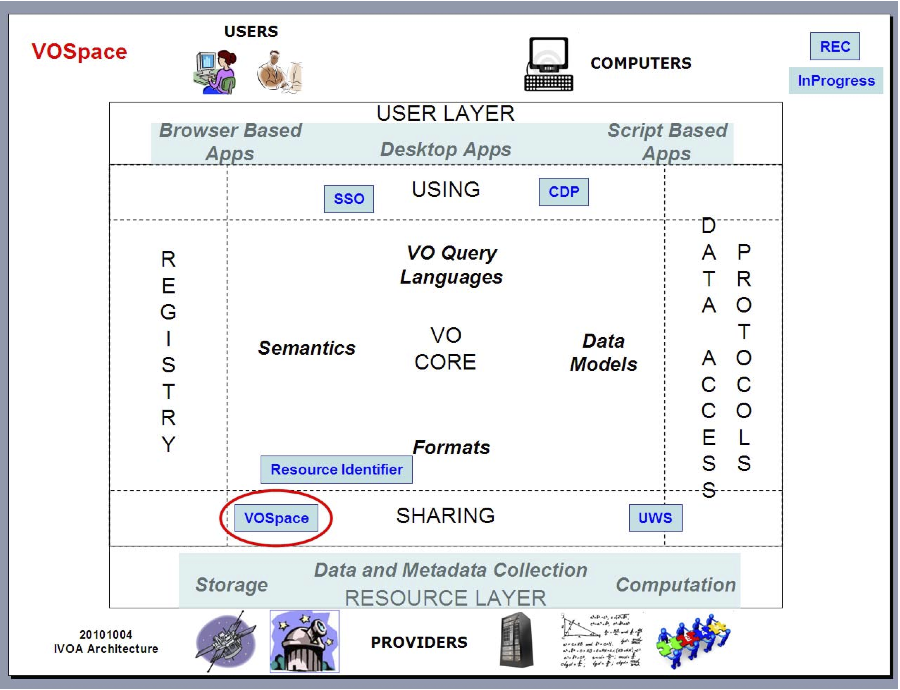

International Virtual Observatory Alliance |
VOSpace
Version 2.1
IVOA Working Draft 20150601
- Working Group
- Grid and Web Services Working Group
- This Version
- http://www.ivoa.net/documents/VOSpace/201560
- Latest Version
- http://www.ivoa.net/documents/VOSpace
- Previous Versions
- Author(s)
- Editor(s)
- Matthew Graham
- Brian Major
Abstract
VOSpace is the IVOA interface to distributed storage. This specification presents the second RESTful version of the interface. Except for minor additions to the 2.1 specification, it is functionally equivalent to the SOAP-based VOSpace 1.1 specification. Note that all 1.x VOSpace clients will not work with this new version of the interface. VOSpace 2.0 and 2.1 clients will work with 2.1 services. VOSpace 2.1 clients, however, will not work with VOSpace 2.0 services.Status of this Document
This is an IVOA Working Draft for review by IVOA members and other interested parties. It is a draft document and may be updated, replaced, or obsoleted by other documents at any time. It is inappropriate to use IVOA Working Drafts as reference materials or to cite them as other than "work in progress".
Contents
1 Introduction1.1 Typical use of a VOSpace service
1.2 Role within the VO Architecture
1.3 Document roadmap
2 VOSpace identifiers
2.1 Identifier resolution
3 VOSpace data model
3.1 Nodes and node types
3.2 Properties
3.2.1 Property values
3.2.2 Property identifiers
3.2.3 Property descriptions
3.2.4 Standard properties
3.3 Capabilities
3.3.1 Example use cases
3.3.2 Capability identifiers
3.3.3 Capability descriptions
3.3.4 UI display name
3.3.5 Standard capabilities
3.4 Views
3.4.1 Example use cases
3.4.2 View identifiers
3.4.3 View descriptions
3.4.4 Default views
3.4.5 Container views
3.5 Protocols
3.5.1 Protocol identifiers
3.5.2 Protocol descriptions
3.5.3 Standard protocols
3.5.4 Custom protocols
3.6 Transfers
3.6.1 XML Document Transfers
3.6.2 URL Parameter Transfers
3.6.3 Service-initiated transfers
3.6.4 Client-initiated transfers
3.7 Searches
3.8 REST bindings
4 Access Control
5 Web service operations
5.1 Service metadata
5.1.1 getProtocols
5.1.2 getViews
5.1.3 getProperties
5.2 Creating and manipulating data nodes
5.2.1 createNode
5.2.2 moveNode
5.2.3 copyNode
5.2.4 deleteNode
5.3 Accessing metadata
5.3.1 getNode
5.3.2 setNode
5.4 Transferring data
5.4.1 pushToVoSpace
5.4.2 pullToVoSpace
5.4.3 pullFromVoSpace
5.4.4 pushFromVoSpace
5.5 Fault arguments
6 Changes since last version
A Machine readable definitions
A.1 Message schema
B Compliance matrix
C Standard properties
D Changes from Previous Versions
Acknowledgments
This document derives from discussions among the Grid and Web Services working group of the IVOA.This document has been developed with support from the National Science Foundation's Information Technology Research Program under Cooperative Agreement AST0122449 with the John Hopkins University, from the UK Science and Technology Facilities Council (STFC), and from the European Commission's Sixth Framework Program via the Optical Infrared Coordination Network (OPTICON).
Conformance-related definitions
The words "MUST", "SHALL", "SHOULD", "MAY", "RECOMMENDED", and "OPTIONAL" (in upper or lower case) used in this document are to be interpreted as described in IETF standard, .The Virtual Observatory (VO) is general term for a collection of federated resources that can be used to conduct astronomical research, education, and outreach. The International Virtual Observatory Alliance (IVOA) is a global collaboration of separately funded projects to develop standards and infrastructure that enable VO applications.
1 Introduction
VOSpace is the IVOA interface to distributed storage. It specifies how VO agents and applications can use network attached data stores to persist and exchange data in a standard way.A VOSpace web service is an access point for a distributed storage network. Through this access point, a client can:
- add or delete data objects
- manipulate metadata for the data objects
- obtain URIs through which the content of the data objects can be accessed
When we speak of "a VOSpace", we mean the arrangement of data accessible through one particular VOSpace service.
Each data object within a VOSpace service is represented as a node and has a description called a representation. A useful analogy to have in mind when reading this document is that a node is equivalent to a file.
Nodes in VOSpace have unique identifiers expressed as URIs in the `vos' scheme, as defined below.
VOSpace 2.0 did not introduce any new functionality to that already offered by prior (SOAP-based) versions of the interface (VOSpace 1.1) but defines a RESTful binding for the interface. VOSpace 2.1 introduces minor changes to VOSpace 2.0 mainly addressing access control and operation optimizations.
1.1 Typical use of a VOSpace service
A typical use case for VOSpace is uploading a local data file to a remote VOSpace service. This is a two-stage process: creating a description of the data file (representation) in the VOSpace including any metadata (its properties) that they want to associate with it (e.g., MIME type), and defining the transfer operation that will actually see the data file bytes uploaded to the VOSpace service.Let's consider the first step: the user provides a XML description of the data file which they HTTP PUT to the appropriate VOSpace URI - this will be the HTTP identifier for the data file in the VOSpace, e.g. http://server.example.com/vospace/nodes/mytable1. The description will resemble this:
<vos:node xmlns="http://www.ivoa.net/xml/VOSpace/v2.1" xmlns:xs="http://www.w3.org/2001/XMLSchema-instance" uri="vos://example.com!vospace/mytable1" xs:type="vos:UnstructuredDataNode"> <vos:properties> <vos:property uri="ivo://ivoa.net/vospace/core#mimetype"> text/xml </vos:property> </vos:properties> </vos:node>
- In the path of the URL in which the client performs the HTTP PUT
- In the node uri attribute of the XML description
The service will reply with an amended version of the representation containing service-specific details in addition to the information supplied by the user. These will include data formats that the service can handle for the type of node created in the VOSpace, third-party interfaces (capabilities) to the data that the service offers and system metadata.
The user will then describe the data format (the view) they want to use in uploading the file, e.g. VOTable, and the transport protocol (the protocol) that they want to employ to upload the file, e.g. HTTP PUT. This will result in the HTTP POSTing of a XML description of the transfer request to the appropriate VOSpace transfer URL: http://server.example.com/vospace/synctrans. The description will resemble this:
<vos:transfer xmlns="http://www.ivoa.net/xml/VOSpace/v2.1"> <vos:target>vos://example.com!vospace/mytable1</vos:target> <vos:direction>pushToVoSpace</vos:direction> <vos:view uri="ivo://ivoa.net/vospace/core#votable"/> <vos:protocol uri="ivo://ivoa.net/vospace/core#httpput"/> </vos:transfer>
The service will reply with a redirect to a location with an amended version of the transfer representation that contains, for the protocols the service supports, URL endpoints that the user may HTTP PUT the data file to, e.g. http://storage1.example.com/vospace/mytable1. The user will then use a regular HTTP client to transfer (PUT) the local file to one of the endpoints. This illustrates an important point about VOSpace - it is only concerned with the server-side management of data storage and transfer. A client negotiates the details of a data transfer with a VOSpace service but the actual transfer of bytes across a network is handled by other tools.
Similarly, when a user wants to retrieve a data file from a VOSpace service, they will specify the data format (view) they want to use in downloading the file (e.g. VOTable), and the transport protocol (the protocol) that they want to employ to download the file (e.g. HTTP GET), and then HTTP POST a XML description of this transfer request to the VOSpace transfer URL (e.g. http://server.example.com/vospace/synctrans). The description will resemble this:
<vos:transfer xmlns="http://www.ivoa.net/xml/VOSpace/v2.1"> <vos:target>vos://example.com!vospace/mytable1</vos:target> <vos:direction>pullFromVoSpace</vos:direction> <vos:view uri="ivo://ivoa.net/vospace/core#votable"/> <vos:protocol uri="ivo://ivoa.net/vospace/core#httpget"/> </vos:transfer>
The service will reply with a redirect to a location that contains an amended version of the transfer representation that contains, for the protocols the service supports, the URL endpoints that the user may HTTP GET the data from, e.g. http://storage1.example.com/vospace/myDataNode. The user can then download the data file by pointing an HTTP client (e.g. web browser) at the specified endpoint.
1.2 Role within the VO Architecture
The IVOA Architecture (Figure 1) provides a high-level view of how IVOA standards work together to connect users and applications with providers of data and services, as depicted in the diagram in Figure 1.

Figure 1: VOSpace in the IVOA Architecture. This provides an interface to distributed storage. It specifies how applications can use networked data stores to persist and exchange data in a standardized fashion.
In this architecture, users employ a variety of tools (from the User Layer) to discover and access archives and services of interest (represented in the Resource Layer). VOSpace provides an interface to storage resources containing the results of using these archives and services and also to other storage solutions, e.g., local disks, where users might want to transfer these results for further work. Items in these resources are referenced by a VOSpace identifier which is related to the standard IVOA Resource Identifier (see section 2). This version of VOSpace employs the UWS design pattern [UWS] to manage data transfers (see section 3.6) and searches (see section 3.7). VOSpace instances may also employ the IVOA Single-Sign-On standard [SSO] for authentication purposes (see section 4) and IVOA Credential Delegation Protocol [CDP] to delegate data transfers.
1.3 Document roadmap
The rest of this document is structured as follows:In Section 2, we specify the URI syntax for identifying data objects (nodes) in VOSpace.
In Section 3, we present the data model that underpins the VOSpace architecture. This consists of a number of data structures, which have XML representations that are used across the wire in message exchanges with a VOSpace service. These structures represent:
- the data objects themselves (nodes)
- metadata that can be associated with a data object (properties)
- third-party interfaces to the data (capabilities)
- the data format used when transferring data objects across the wire (views)
- the transport protocol employed in a data transfer (protocols)
- the data transfer itself (transfers)
- searches of data objects (searches)
We also describe the REST bindings between these representations and their URIs (HTTP identifiers).
In Section 4, we outline how security and access control policies are currently handled in VOSpace.
In Section 5, we detail the operations that the VOSpace interface supports. These handle access to service-level metadata, the creation and manipulation of nodes within the VOSpace, access to node metadata (properties) and data transfer to and from the VOSpace.
In Appendex A, we formally define the VOSpace interface with a machine readable description of its requests and responses and in Appendix B, we present a compliance matrix listing the mandatory behaviour required of a valid VOSpace 2.1 service.
2 VOSpace identifiers
The identifier for a node in VOSpace SHALL be a URI with the scheme vos.Such a URI SHALL have the following parts with the meanings and encoding rules defined in RFC2396.
- scheme
- naming authority
- path
- (optional) query
- (optional) fragment identifier (with the expected semantics URI fragments in IVOA specifications)
The naming authority for a VOSpace node SHALL be the VOSpace service through which the node was created. The authority part of the URI SHALL be constructed from the IVO registry identifier [IVORN] for that service by deleting the ivo:// prefix and changing all forward-slash characters(`/') in the resource key to exclamation marks (`!') or tildes (` ∼ '). Note that a service SHALL be consistent in its use of separator characters (`!' or ` ∼ ') when referring to its own data but SHALL accept either as valid in URIs in service requests. For the rest of the document, we shall use `!' as the default character.
This is an example of a possible VOSpace identifier.
vos://example.com!vospace/myresults/siap-out-1.vot
The URI scheme is vos
Using a separate URI scheme for VOSpace identifiers enables clients to distinguish between IVO registry identifiers and VOSpace identifiers.
example.com!vospace is the authority part of the URI, corresponding to the IVO registry identifier ivo://example.com/vospace. This is the IVO registry identifier of the VOSpace service that contains the node.
/siap-out-1.vot is the URI path
Slashes in the URI path imply a hierarchical arrangement of data: the data object identified by vos://example.com!vospace/myresults/siap-out-1.vot is within the container identified by vos://example.com!vospace/myresults.
Literal space characters are also not allowed in URIs.
All ancestors in the hierarchy SHALL be resolvable as containers (ContainerNodes), all the way up to the root node of the space (this precludes any system of implied hierarchy in the naming scheme for nodes with ancestors that are just logical entities and cannot be reified, e.g. the Amazon S3 system).
A VOSpace identifier is globally unique, and identifies one specific node in a specific VOSpace service.
The standardID for this specification SHALL be:
ivo://ivoa.net/std/VOSpace/v2.1
2.1 Identifier resolution
A VOSpace identifier can be resolved to a HTTP endpoint for accessing representations of the node associated with it. A client SHOULD use the following procedure to resolve access to a VOSpace node from a VOSpace identifier:
- Resolve HTTP service endpoint of VOSpace service with registry
- Append "nodes/" and the path following the naming authority part of the VOSpace identifier to the service endpoint
Given the example identifier
vos://example.com!vospace/container-6/siap-out-1.vot?foo=bar
Processing the URI to resolve the VOSpace service would involve:
1. Extract the IVO registry identifier of the VOSpace service by prepending an ivo scheme to the naming authority part:
ivo://example.com/vospace2. Resolve the IVO identifier in a registry and retrieve the access URL of the service endpoint:
http://server.example.com/vospace3. Append "nodes/" and the path part of the VOSpace identifier:
http://server.example.com/vospace/nodes/container-6/siap-out-1.vot?foo=bar
Note that any fragment identifier in the identifier SHOULD be removed when resolving the identifier to a HTTP endpoint, consistent with the implied semantics of URI fragments (URI fragments in IVOA specifications).
3 VOSpace data model
3.1 Nodes and node types
We refer to the arrangement of data accessible through one particular VOSpace service as "a VOSpace".
Each data object within a VOSpace SHALL be represented as a node that is identified by a URI.
There are different types of nodes and the type of a VOSpace node determines how the VOSpace service stores and interprets the node data.
The types are arranged in a hierarchy (see Figure 2), with more detailed types inheriting the structure of more generic types.

Figure 2: Node hierarchy - This shows the inheritance structure for the different types of nodes in VOSpace.
The following types (and representations) are defined:
- Node is the most basic type
- ContainerNode describes a data item that can contain other data items
- DataNode describes a data item stored in the VOSpace
- UnstructuredDataNode describes a data item for which the VOSpace does not understand the data format
- StructuredDataNode describes a data item for which the space understands the format and may make transformations that preserve the meaning of the data.
- LinkNode describes a node that points to another node.
When data is stored and retrieved from an UnstructuredDataNode, the bit pattern read back SHALL be identical to that written.
When data is stored and retrieved from a StructuredDataNode, the bit pattern returned MAY be different to the original. For example, storing tabular data from a VOTable file will preserve the tabular data, but any comments in the original XML file may be lost.
A Node representation SHALL have the following elements:
- uri: the vos:// identifier for the node, URI-encoded according to RFC2396.
- properties: a set of metadata properties for the node
- capabilities: a third-party interface to a data object
In addition, a DataNode representation SHALL have the following elements:
- accepts: a list of the views (data formats) that the node can accept
- provides: a list of the views (data formats) that the node can provide
A DataNode representation MAY have the following element:
- busy: a boolean flag to indicate that the data associated with the node cannot be accessed.
The busy flag is used to indicate that an internal operation is in progress, and the node data is not available.
A ContainerNode representation SHALL have the following elements, in addition to those it inherits from the Node representation:
- nodes: a list of the direct children, if applicable, that the container has. Each child is represented as a node subelement containing its vos:// identifier, URI-encoded according to RFC2396
A LinkNode representation SHALL have the following elements, in addition to those it inherits from the Node representation:
- target: the target URI, URI-encoded according to RFC2396
The link target can be a URI that points to any type of resource, including other VOSpace Nodes (within the same VOSpace service or in another service), or external resources outside VOSpace altogether.
The properties of a LinkNode do not propagate to the target of the LinkNode, i.e., a property attached to a LinkNode does not also get attached to the target node. One use case is to enable third-party annotations to be associated with a resource but without the resource itself getting cluttered with unnecessary metadata. In this case, the client creates a LinkNode pointing to the resource in question and then adds the annotations as properties of the LinkNode.
Both the ContainerNode and the LinkNode SHALL have no data bytes associated with them.
The set of node types defined by this standard is closed; new types may be introduced only via new versions of the standard.
To comply with the standard, a client or service SHALL be able to parse XML representations of all the node types defined in the current specification.
Note: This does not require all services to support all of the Node types, just that it can process an XML request containing any of the types. If the service receives a request for a type that it does not support, the service SHOULD return a TypeNotSupported fault. The service SHALL NOT throw an XML parser error if it receives a request for a type that it does not support.
3.2 Properties
Properties are simple string-based metadata properties associated with a node.Individual Properties should contain simple short string values, not large blocks of information. If a system needs to attach a large amount of metadata to a node, then it should either use multiple small Properties, or a single Property containing a URI or URL pointing to an external resource that contains the additional metadata.
A Property representation SHALL have the following elements:
- uri: the Property identifier
- value: the string value of the Property
- readOnly: a boolean flag to indicate that the Property cannot be changed by the client
Properties may be set by the client or the service.
3.2.1 Property values
Unless they have special meaning to the service or client, Properties are treated as simple string values.When a Property can take multiple values, e.g., a list of groups which can access a particular resource, these SHOULD be comma-separated, unless the property description defines a specific delimiter.
Some Properties may have meaning to the service; others may have meaning only to one specific type of client. A service implementation does not need to understand the meaning of all the Properties of a node. Any Properties that it does not understand can simply be stored as text strings.
3.2.2 Property identifiers
Every new type of Property SHALL require a unique URI to identify the Property and its meaning.The rules for the Property identifiers are similar to the rules for namespace URIs in XML schema. The only restriction is that it SHALL be a valid (unique) URI.
- An XML schema namespace identifier can be just a simple URN, e.g. urn:my-namespace
- Within the IVOA, the convention for namespace identifiers is to use a HTTP URL pointing to the namespace schema or a resource describing it
The current VOSpace schema defines Property identifiers as anyURI. The only restriction is that it SHALL be a valid (unique) URI.
- A Property URI can be a simple URN, e.g. urn:my-property
This may be sufficient for testing and development on a private system, but it is not scalable for use on a public service.
For a production system, any new Properties SHOULD have unique URIs that can be resolved into to a description of the Property.
Ideally, these should be IVO registry URIs that point to a description registered in the IVO registry:
- ivo://my-registry/vospace/properties#my-property
Using an IVO registry URI to identify Properties has two main advantages:
- IVO registry URIs are by their nature unique, which makes it easy to ensure that different teams do not accidentally use the same URI
- If the IVO registry URI points to a description registered in the IVO registry, this provides a mechanism to discover what the Property means
3.2.3 Property descriptions
If the URI for a particular Property is resolvable, i.e. an IVO registry identifier or a HTTP URL, then it SHOULD point to an XML resource that describes the Property.A Property description SHOULD describe the data type and meaning of a Property.
A PropertyDescription SHOULD have the following members:
- uri: the formal URI of the Property
- DisplayName: A display name for the Property
- Description: A text block describing the meaning and validation rules of the Property
A PropertyDescription MAY have the following OPTIONAL members:
- UCD: the Universal Content Descriptor (in the UCD1 + scheme) for the Property
- Unit: the unit of measurement of the Property
The information in a Property description can be used to generate a UI for displaying and modifying the different types of Properties.
Note that at the time of writing, the schema for registering PropertyDescriptions in the IVO registry has not been finalized.
UI Display name If a client is unable to resolve a Property identifier into a description, then it may just display the identifier as a text string:
- urn:modifieddate
If the client can resolve the Property identifier into a description, then the client may use the information in the description to display a human readable name and description of the Property:
- Last modification date of the node data
Property editors If the client is unable to resolve a Property identifier into a description, or does not understand the type information defined in the description, then the client MAY treat the Property value as a simple text string.
If the client can resolve the Property identifier into a description, then the client MAY use the information in the description to display an appropriate editing tool for the Property.
In the current version of the specification the rules for editing Properties are as follows:
- A service MAY impose validation rules on the values of specific types of Properties
- If a client attempts to set a Property to an invalid value, then the service MAY reject the change
- Where possible, the validation rules for a type of Property SHOULD be defined in the Property description
Future versions of the VOSpace specification may extend the PropertyDescription to include more specific machine readable validation rules for a Property type.
Note that at the time of writing, the schema for registering validation rules in PropertyDescriptions has not been finalized.
3.2.4 Standard properties
Property URIs and PropertyDescriptions for the core set of Properties are registered under a StandardKeyEnumeration resource [VOStd] in the IVOA registry with the resource identifier ivo://ivoa.net/vospace/core. The following URIs SHOULD be used to represent the service properties:
- ivo://ivoa.net/vospace/core#title SHALL be used as the property URI denoting a name given to the resource
- ivo://ivoa.net/vospace/core#creator SHALL be used as the property URI denoting an entity primarily responsible for making the resource
- ivo://ivoa.net/vospace/core#subject SHALL be used as the property URI denoting the topic of the resource
- ivo://ivoa.net/vospace/core#description SHALL be used as the property URI denoting an account of the resource
- ivo://ivoa.net/vospace/core#publisher SHALL be used as the property URI denoting an entity responsible for making the resource available
- ivo://ivoa.net/vospace/core#contributor SHALL be used as the property URI denoting an entity responsible for making contributions to this resource
- ivo://ivoa.net/vospace/core#date SHALL be used as the property URI denoting a point or period of time associated with an event in the lifecycle of the resource
- ivo://ivoa.net/vospace/core#type SHALL be used as the property URI denoting the nature or genre of the resource
- ivo://ivoa.net/vospace/core#format SHALL be used as the property URI denoting the file format, physical medium, or dimensions of the resource
- ivo://ivoa.net/vospace/core#identifier SHALL be used as the property URI denoting an unambiguous reference to the resource within a given context
- ivo://ivoa.net/vospace/core#source SHALL be used as the property URI denoting a related resource from which the described resource is derived
- ivo://ivoa.net/vospace/core#language SHALL be used as the property URI denoting a language of the resource
- ivo://ivoa.net/vospace/core#relation SHALL be used as the property URI denoting a related resource
- ivo://ivoa.net/vospace/core#coverage SHALL be used as the property URI denoting the spatial or temporal topic of the resource, the spatial applicability of the resource, or the jurisdiction under which the resource is relevant
- ivo://ivoa.net/vospace/core#rights SHALL be used as the property URI denoting information about rights held in and over the resource
- ivo://ivoa.net/vospace/core#availableSpace SHALL be used as the property URI denoting the amount of space available within a container
- ivo://ivoa.net/vospace/core#groupread SHALL be used as the property URI denoting the list of groups which can only read this resource (read-only)
- ivo://ivoa.net/vospace/core#groupwrite SHALL be used as the property URI denoting the list of groups which can read and write to this resource (read-write)
- ivo://ivoa.net/vospace/core#publicread SHALL be used as the property URI denoting whether this resource is world readable (anon-read-only)
- ivo://ivoa.net/vospace/core#quota SHALL be used as the property URI denoting the value of a system quota on the resource
- ivo://ivoa.net/vospace/core#length SHALL be used as the property URI denoting the length or size of a resource
- ivo://ivoa.net/vospace/core#mtime SHALL be used as the property URI denoting the data modification time
- ivo://ivoa.net/vospace/core#ctime SHALL be used as the property URI denoting status change (aka metadata modification) time
- ivo://ivoa.net/vospace/core#btime SHALL be used as the property URI denoting initial creation time
However, this is not intended to be a closed list, different implementations are free to define and use their own Properties.
3.3 Capabilities
A Capability describes a third-party interface to a node. One application of this would be to enable data access to a node or its contents using a 3rd party service interface.A Capability representation SHALL have the following members:
- uri: the Capability identifier
- endpoint: the endpoint URL to use for the third-party interface
- param: a set of parameters for the capability
3.3.1 Example use cases
A ContainerNode containing image files may offer a DAL SIAP capability so that the images in the container can be accessed using a SIAP service. In this way, a user could create a (DAL enabled) Container in VOSpace, transfer some images into it and then query the set of images using the SIAP interface.Another example is a DataNode that provides a OpenStack Swift capability so that the OpenStack service API is exposed on that node.
3.3.2 Capability identifiers
Every new type of Capability SHALL require a unique URI to identify the Capability. The rules for the Capability identifiers are similar to the rules for namespace URIs in XML schema. The only restriction is that it SHALL be a valid (unique) URI.
- An XML schema namespace identifier can be just a simple URN, e.g. urn:my-namespace
- Within the IVOA, the convention for namespace identifiers is to use a HTTP URL pointing to the namespace schema, or a resource describing it.
The VOSpace schema defines Capability identifiers as anyURI. The only restriction is that it SHALL be a valid (unique) URI.
- A Capability URI can be a simple URN, e.g. urn:my-capability
This may be sufficient for testing and development on a private system, but it is not suitable for use on a public service. For a production system, any new Capabilities SHOULD have unique URIs that can be resolved into a description of the Capability. Ideally, these SHOULD be IVO registry URIs that point to a description registered in the IVO registry:
- ivo://my-registry/vospace/capabilities#my-capability
Using an IVO registry URI to identify Capabilities has two main advantages:
- IVO registry URIs are by their nature unique, which makes it easy to ensure that different teams do not accidentally use the same URI
- If the IVO registry URI points to a description registered in the IVO registry, this provides a mechanism to discover how to use the Capability.
3.3.3 Capability descriptions
If the URI for a particular Capability is resolvable, i.e. an IVO registry identifier or a HTTP URL then it SHOULD point to an XML resource that describes the Capability.A CapabilityDescription SHOULD describe the third-party interface and how it should be used in this context. A CapabilityDescription SHOULD have the following members:
- uri: the formal URI of the Capability
- DisplayName: a simple display name of the Capability.
- Description: a text block describing the third-party interface and how it should be used in this context.
Note that at the time of writing, the schema for registering CapabilityDescriptions in the IVO registry has not been finalized.
3.3.4 UI display name
If a client is unable to resolve a Capability identifier into a description then it may just display the identifier as a text string:
- Access data using urn:openstack
If a client can resolve the Capability identifier into a description then the client may use the information in the description to display a human readable name and description of the Capability:
- Access data using openstack
3.3.5 Standard capabilities
Capability URIs and CapabilityDescriptions for the core set of Capabilities are registered under a StandardKeyEnumeration resource [VOStd] in the IVOA registry with the resource identifier ivo://ivoa.net/vospace/core.. The following URIs SHALL be used to represent the service capabilities:
- ivo://ivoa.net/vospace/core#vospace-1.0 SHALL be used as the capability URI for a VOSpace 1.0 service
- ivo://ivoa.net/vospace/core#vospace-1.1 SHALL be used as the capability URI for a VOSpace 1.1 service
- ivo://ivoa.net/vospace/core#vospace-2.0 SHALL be used as the capability URI for a VOSpace 2.0 service
- ivo://ivoa.net/vospace/core#vospace-2.1 SHALL be used as the capability URI for a VOSpace 2.1 service
One use case for this would be a VOSpace 2.1 client talking to a service that implements both VOSpace 2.0 and VOSpace 2.1, where the client is acting on behalf of a third party agent that only understands VOSpace 2.0. In this case, the client can use the information in the VOSpace 2.0 capability to direct the third party agent to the VOSpace 2.0 endpoint.
Other standard service interfaces will also be registered, e.g.
- Cone Search
- SIAP
- SSAP
- TAP
However, this is not intended to be a closed list and different implementations are free to define and use their own Capabilities.
3.4 Views
A View describes the data formats and contents available for importing or exporting data to or from a VOSpace node.The metadata for a DataNode contains two lists of Views.
- accepts: is a list of Views that the service can accept for importing data into the Node
- provides: is a list of Views that the service can provide for exporting data from Node
A View representation SHALL have the following members:
- uri: an optional boolean flag to indicate that the View preserves the original bit pattern of the data
- original: a set of name-value pairs that can be used to specify additional arguments for the View
3.4.1 Example use cases
A simple VOSpace system that stores data as a binary files can just return the contents of the original file. The client supplies a View identifier when it imports the data, and the service uses this information to describe the data to other clients.A file based system can use the special case identifier
ivo://ivoa.net/vospace/core#anyviewto indicate that it will accept any data format or View for a Node.
For example:
- A client imports a file into the service, specifying a View to describe the file contents
- The service stores the data as a binary file and keeps a record of the View
- The service can then use the View supplied by the client to describe the data to other clients
This type of service is not required to understand the imported data, or to verify that it contents match the View, it treats all data as binary files.
Database store A VOSpace system that stores data in database tables would need to be able to understand the data format of an imported file in order to parse the data and store it correctly. This means that the service can only accept a specific set of Views, or data formats, for importing data into the Node.
In order to tell the client what input data formats it can accept, the service publishes a list of specific Views in the accepts list for each Node.
On the output side, a database system would not be able to provide access to the original input file. The contents of file would have been transferred into the database table and then discarded. The system has to generate the output results from the contents of the database table.
In order to support this, the service needs to be able to tell the client what Views of the data are available.
A database system may offer access to the table contents as either VOTable or FITS files, it may also offer zip or tar.gz compressed versions of these. In which case the system needs to be able to express nested file formats such as "zip containing VOTable" and "tar.gz containing FITS".
A service may also offer subsets of the data. For example, a work flow system may only want to look at the table headers to decide what steps are required to process the data. If the table contains a large quantity of data, then downloading the whole contents just to look at the header information is inefficient. To make this easier, a database system may offer a 'metadata only' View of the table, returning a VOTable or FITS file containing just the metadata headers and no rows.
So our example service may want to offer the following Views of a database table:
- Table contents as FITS
- Table contents as VOTable
- Table contents as zip containing FITS
- Table contents as zip containing VOTable
- Table contents as tar.gz containing FITS
- Table contents as tar.gz containing VOTable
- Table metadata as FITS
- Table metadata as VOTable
The service would publish this information as a list of Views in the provides section of the metadata for each Node.
The VOSpace specification does not mandate what Views a service must provide. The VOSpace specification is intended to provide a flexible mechanism enabling services to describe a variety of different Views of data. It is up to the service implementation to decide what Views of the data it can accept and provide.
3.4.2 View identifiers
Every new type of View SHALL require a unique URI to identify the View and its content.The rules for the View identifiers are similar to the rules for namespace URIs in XML schema. The only restriction is that it SHALL be a valid (unique) URI.
- An XML schema namespace identifier can be just a simple URN, e.g. urn:my-namespace
- Within the IVOA, the convention for namespace identifiers is to use a HTTP URL pointing to the namespace schema, or a resource describing it
The current VOSpace schema defines View identifiers as anyURI. The only restriction is that it SHALL be a valid (unique) URI.
- A View URI can be a simple URN, e.g. urn:my-view
This may be sufficient for testing and development on a private system, but it is not scalable for use on a public service.
For a production system, any new Views SHOULD have unique URIs that can be resolved into to a description of the View.
Ideally, these should be IVO registry URIs that point to a description registered in the IVO registry:
- ivo://my-registry/vospace/views#my-view
Using an IVO registry URI to identify Views has two main advantages:
- IVO registry URIs are by their nature unique, which makes it easy to ensure that different teams do not accidentally use the same URI
- If the IVO registry URI points to a description registered in the IVO registry, this provides a mechanism to discover what the View contains
3.4.3 View descriptions
If the URI for a particular View is resolvable, i.e. an IVO registry identifier or a HTTP URL, then it SHOULD point to an XML resource that describes the View.A ViewDescription SHOULD describe the data format and/or content of the view.
A ViewDescription SHOULD have the following members:
- uri: the formal URI of the View
- DisplayName: a simple display name of the View.
- Description: a text block describing the data format and content of the View.
A ViewDescription MAY have the following optional members:
- MimeType: the standard MIME type of the View, if applicable
- Parameters: a list of required and option parameters the view accepts, if applicable
However, at the time of writing, the schema for registering ViewDescriptions in the IVO registry has not been finalized.
UI Display name If a client is unable to resolve a View identifier into a description, then it MAY just display the identifier as a text string:
- Download as urn:table.meta.fits
If the client can resolve the View identifier into a description, then the client MAY use the information in the description to display a human readable name and description of the View:
- Download table metadata as FITS header
Mime Types If a VOSpace service provides HTTP access to the data contained in a Node, then if the ViewDescription contains a MimeType field, this SHOULD be included in the appropriate header field of the HTTP response.
3.4.4 Default views
The following standard URIs are registered under a StandardKeyEnumeration resource [VOStd] in the IVOA registry with the resource identifier ivo://ivoa.net/vospace/core. They SHALL be used to refer to the default import and export views:
- ivo://ivoa.net/vospace/core#anyview SHALL be used as the view URI to indicate that a service will accept any view for an import operation
- ivo://ivoa.net/vospace/core#binaryview SHALL be used as the view URI to import or export data as a binary file
- ivo://ivoa.net/vospace/core#defaultview SHALL be used by a client to indicate that the service should choose the most appropriate view for a data export
Default import view If a client imports data using this view, the data SHALL be treated as a binary BLOB, and stored as is with no additional processing. This is equivalent to the application/binary MIME type.
Note, this view is OPTIONAL, and the service may throw a ViewNotSupported exception if it does not accept this view. In particular, this view cannot be used to import data into a StructuredDataNode as the service needs to know about and understand the data format to be able to create the StructuredDataNode.
Note, this view is only valid for the data import operations, pullToVoSpace and pushToVoSpace. If this view is requested in an export operation, pullFromVoSpace and pushToVoSpace, then the service SHOULD throw a ViewNotSupported exception.
Default export view If a client requests data using this view, the server SHALL choose whichever of the available views (the server) thinks is the most appropriate, based on how the data is stored. In a simple file-based system, this will probably be the same format that the data was originally imported in. In a database table system, this will probably either be VOTable or CVS, depending on the level of metadata available.
Note, this view is OPTIONAL, and the server may throw a ViewNotSupported exception if it does not provide this view. However, in most cases, it is expected that a service would be able to select an appropriate 'default' format for data held within the service.
Note, this view is only valid for the data export operations, pullFromVoSpace and pushFromVoSpace. If this view is requested in an import operation, pullToVoSpace and pushToVoSpace, then the service SHOULD throw a ViewNotSupported fault.
3.4.5 Container views
In VOSpace 2.1, a view of a ContainerNode describes the data representation (format) of a file or data stream that represents the combined contents of the node and its children. If the view describes an archive format (tar, zip, etc.) then a service that accepts this view (format) for a ContainerNode SHALL provide access to the archive contents as children nodes of the container. Whether or not the service actually unpacks the archive is implementation dependent but the service SHALL behave as though it has done so. For example, a client may want to upload a tar file containing several images to a VOSpace service. If they associate it with (upload it to) a (Un)structuredDataNode then it will be treated as a blob and its contents will be not be available. However, if they upload it to a ContainerNode with an accepts view of "tar" then the image files within the tar file will be represented as children nodes of the ContainerNode and accessible like any other data object within the space.If a service provides an archive format (tar, zip, etc.) view of a ContainerNode then the service SHALL package the contents of the container and all its child nodes in the specified format.
3.5 Protocols
A Protocol describes the parameters required to perform a data transfer using a particular protocol.A Protocol representation SHALL have the following members:
- uri: the Protocol identifier
- endpoint: the endpoint URL to use for the data transfer additional arguments required for the transfer
A protocol representation MAY have the following members:
- param: A list of name-value pairs that specify any additional arguments required to support the protocol
- securityMethod: The requested (and/or resulting) authentication type
Note: endpoint will only contain a value after the response from the service is received.
3.5.1 Protocol identifiers
Every new type of Protocol requires a unique URI to identify the Protocol and how to use it.The rules for the Protocol identifiers are similar to the rules for namespace URIs in XML schema. The only restriction is that it SHALL be a valid (unique) URI
- An XML schema namespace identifier can be just a simple URN, e.g. urn:my-namespace
- Within the IVOA, the convention for namespace identifiers is to use a HTTP URL pointing to the namespace schema, or a resource describing it
The current VOSpace schema defines Protocol identifiers as anyURI. The only restriction is that it SHALL be a valid (unique) URI.
- A Protocol URI can be a simple URN, e.g. urn:my-protocol
This may be sufficient for testing and development on a private system, but it is not scalable for use on a public service.
For a production system, any new Protocols SHOULD have unique URIs that can be resolved into to a description of the Protocol.
Ideally, these should be IVO registry URIs that point to a description registered in the IVO registry:
-
ivo://my-registry/vospace/protocols#my-protocol
Using an IVO registry URI to identify Protocols has two main advantages:
- IVO registry URIs are by their nature unique, which makes it easy to ensure that different teams do not accidentally use the same URI
- If the IVO registry URI points to a description registered in the IVO registry, this provides a mechanism to discover how to use the Protocol
3.5.2 Protocol descriptions
If the URI for a particular Protocol is resolvable, i.e. an IVO registry identifier or a HTTP URL, then it SHOULD point to an XML resource that describes the Protocol.A ProtocolDescription SHOULD describe the underlying transport protocol, and how it should be used in this context.
A ProtocolDescription SHOULD have the following members:
- uri: the formal URI of the Protocol
- DisplayName: A simple display name of the Protocol
- Description: Text block describing describing the underlying transport protocol, and how it should be used in this context
However, at the time of writing, the schema for registering ProtocolDescriptions in the IVO registry has not been finalized.
UI display name
If a client is unable to resolve a Protocol identifier into a description, then it MAY just display the identifier as a text string:
- Download using urn:my-protocol
If the client can resolve the Protocol identifier into a description, then the client MAY use the information in the description to display a human readable name and description of the Protocol:
- Download using standard HTTP GET
3.5.3 Standard protocols
Protocol URIs and ProtocolDescriptions for the core set of standard transport protocols are registered under a StandardKeyEnumeration resource [VOStd] in the IVOA registry with the resource identifier ivo://ivoa.net/vospace/core. The following URIs SHALL be used to represent the standard protocols:
-
ivo://ivoa.net/vospace/core#httpget
SHALL be used as the protocol URI for a HTTP GET transfer -
ivo://ivoa.net/vospace/core#httpput
SHALL be used as the protocol URI for a HTTP PUT transfer -
ivo://ivoa.net/vospace/core#httpsget
SHALL be used as the protocol URI for a HTTP GET transfer over a Secure Socket Layer (SSL) -
ivo://ivoa.net/vospace/core#httpsput
SHALL be used as the protocol URI for a HTTP PUT transfer over a Secure Socket Layer (SSL)
However, this is not intended to be a closed list, different implementations are free to define and use their own transfer Protocols and authentication types.
3.5.4 Custom protocols
There are several use cases where a specific VOSpace implementation may want to define and use a custom VOSpace transfer Protocol, either extending an existing Protocol, or defining a new one.SRB Gateway One example would be a VOSpace service that was integrated with a SRB (Storage Resource Broker) system. In order to enable the service to use the native SRB transport protocol to transfer data, the service providers would need to register a new ProtocolDescription to represent the SRB transport protocol.
The ProtocolDescription would refer to the technical specification for the SRB transport protocol, and define how it should be used to transfer data to and from the VOSpace service.
Clients that do not understand the SRB transport protocol would not recognize the URI for the SRB Protocol, and would ignore Transfer options offered using this Protocol.
Clients that were able to understand the SRB transport protocol would recognize the URI for the SRB Protocol, and could use the 'srb://..' endpoint address in a Protocol option to transfer data using the SRB transport protocol.
Enabling different groups to define, register and use their own custom Protocols in this way means that support for new transport protocols can be added to VOSpace systems without requiring changes to the core VOSpace specification.
In this particular example, it is expected that one group within the IVOA will work with the SRB team at SDSC to define and register the Protocol URI and ProtocolDescription for using the SRB protocol to transfer data to and from VOSpace systems.
Other implementations that plan to use the SRB transport protocol in the same way could use the same Protocol URI and ProtocolDescription to describe data transfers using the SRB transport protocol.
The two implementations would then be able use the common Protocol URI to negotiate data transfers using the SRB transport protocol.
Local NFS transfers Another example of a custom Protocol use case would to transfer data using the local NFS file system within an institute.
If an institute has one or more VOSpace services co-located with a number of data processing applications, all located within the same local network, then it would be inefficient to use HTTP GET and PUT to transfer the data between the services if they could all access the same local file system.
In this case, the local system administrators could register a custom ProtocolDescription which described how to transfer data using their local NFS file system.
-
ivo://my.institute/vospace/protocols#internal-nfs
Data transfers using this Protocol would be done using file:// URLs pointing to locations within the local NFS file system:
-
file:///net/host/path/file
These URLs would only have meaning to services and applications located within the local network, and would not be usable from outside the network.
Services and applications located within the local network would be configured to recognize the custom Protocol URI, and to use local file system operations to move files within the NFS file system.
Services and applications located outside local network would not recognize the custom Protocol URI and so would not attempt to use the internal file URLs to transfer data.
Note that in this example the custom Protocol URI and the associated ProtocolDescription refer to data transfers using file URLs within a specific local NFS file system.
If a different institute wanted to use a similar system to transfer data within their own local network, then they would have to register their own custom Protocol URI and associated ProtocolDescription.
The two different Protocol URIs and ProtocolDescriptions describe how to use the same underlying transport protocol (NFS) in different contexts.
Enabling different groups to define, register and use their own custom Protocols in this way means that systems can be configured to use the best available transport protocols for transferring data, without conflicting with other systems who may be using similar a transport protocol in a different context.
3.6 Transfers
A Transfer describes the details of a data transfer to or from a VOSpace.
3.6.1 XML Document Transfers
Transfers can be represented as XML documents. For example:
<vos:transfer xmlns:vos="http://www.ivoa.net/xml/VOSpace/v2.1"> <vos:target>vos://example.com!vospace/myspace/myfile</vos:target> <vos:direction>pushToVoSpace</vos:direction> <vos:protocol uri="ivo://ivoa.net/vospace/core#httpput" /> </vos:transfer>
Clients send transfer XML documents to a VOSpace synchronous or asynchronous UWS transfer endpoint. The VOSpace service SHALL put, in the UWS Job results, a resulting transfer XML document.
A client initiated UWS Job representation of a Transfer SHALL have the following parameters:
- target: denotes the VOSpace node to/from which data is to be transferred
- direction: denotes the direction of a data transfer
- It can be a URI for internal data transfers (move and copy operations) or one of: pushToVoSpace, pullToVoSpace, pushFromVoSpace or pullFromVoSpace - for external data transfer.
- It can be a URI for internal data transfers (move and copy operations) or one of: pushToVoSpace, pullToVoSpace, pushFromVoSpace or pullFromVoSpace - for external data transfer.
- view: denotes the requested View
- For the transfer to be valid, the specified View must match one of those listed in the accepts or provides list of the Node.
- For an internal data transfer, this parameter is not required.
- For the transfer to be valid, the specified View must match one of those listed in the accepts or provides list of the Node.
- protocol: denotes the transfer protocol(s) to use
- A transfer may contain more than one protocol with different Protocol URIs.
- Each protocol may contain one or more security methods that can be applied to the protocol.
- For an internal data transfer, this parameter is not required.
- A transfer may contain more than one protocol with different Protocol URIs.
- keepBytes: denotes whether the source object is to be kept in an internal data transfer, i.e. distinguishes between a move and a copy
- For an external data transfer, this parameter is not required.
- For an external data transfer, this parameter is not required.
- param: A list of zero or more parameters that specify any additional arguments for the transfer.
- Standard Property URIs should be used as the parameter key.
- e.g. Clients may tell the service the size of a file they intend to upload: <vos:param uri=ïvo://ivoa.net/vospace/core#length»1024</vos:param>
- Standard Property URIs should be used as the parameter key.
This representation will be used as a child of the jobInfo element in a UWS Job representation.
The service representation of the results of a Transfer SHALL have the following members:
- target: denotes the VOSpace node to/from which data is to be transferred
- direction: denotes the direction of a data transfer
- It can be a URI for internal data transfers (move and copy operations) or one of: pushToVoSpace, pullToVoSpace, pushFromVoSpace or pullFromVoSpace - for an external data transfer.
- It can be a URI for internal data transfers (move and copy operations) or one of: pushToVoSpace, pullToVoSpace, pushFromVoSpace or pullFromVoSpace - for an external data transfer.
- view: A View specifying the requested View
- For the transfer to be valid, the specified View must match one of those listed in the accepts or provides list of the Node.
- For an internal data transfer, this parameter is not required.
- For the transfer to be valid, the specified View must match one of those listed in the accepts or provides list of the Node.
- protocol: denotes the transfer protocol(s) to use
- A transfer may contain more than one protocol with different Protocol URIs.
- A Transfer may contain more than one Protocol element with the same Protocol URI with different endpoints
- Each protocol on the result must contain an endpoint.
- Each protocol may contain one or more security methods that can be applied to the protocol.
- For an internal data transfer, this parameter is not required.
- A transfer may contain more than one protocol with different Protocol URIs.
- param: parameters related to the transfer
- A transfer may contain zero or more transfer parameters.
- A transfer may contain zero or more transfer parameters.
3.6.2 URL Parameter Transfers
A simplified and restricted method of transfer negotiation makes use of URL query string parameters rather than XML documents. Parameter based transfer negotiation support is optional and is limited to the UWS synchronous transfer endpoint. An example URL for a parameter transfer negotiation:
http://server.example.com/vospace/synctrans? TARGET=vos://example.com~vospace/mydata1& DIRECTION=pullFromVoSpace& PROTOCOL=ivo://ivoa.net/vospace/core#httpget
The following parameters MUST be supplied by the client requesting a transfer:
- TARGET: denotes the VOSpace node to/from which data is to be transferred
- DIRECTION: denotes the direction of a data transfer
- With parameter based negotiation, only pushToVoSpace and pullFromVoSpace are allowed as values for DIRECTION.
- With parameter based negotiation, only pushToVoSpace and pullFromVoSpace are allowed as values for DIRECTION.
- PROTOCOL: denotes the transfer protocol(s) to use.
- With parameter based negotiation, clients MUST provide exactly one PROTOCOL parameter.
- With parameter based negotiation, clients MUST provide exactly one PROTOCOL parameter.
The following parameters MAY be supplied by the client requesting a transfer:
- VIEW: The standard URI of the view to use. If no view is provided the service SHALL use the default view.
- SECURITYMETHOD: The standard URI of the security method that can be used for the supplied PROTOCOL.
- REQUEST=redirect: If the supplied, the service SHALL respond with an HTTP redirect to an endpoint for the PROTOCOL.
- This parameter is only applicable when the value of the DIRECTION parameter is pullFromVoSpace.
- This parameter is only applicable when the value of the DIRECTION parameter is pullFromVoSpace.
Since the parameter values are in the request URL they must be URL-encoded.
Upon receipt of a parameter based transfer negotiation request to the synchronous transfer endpoint, the service SHALL reply with a XML representation of the transfer results in the response body. The only exception to this is when the DIRECTION is pullFromVoSpace and the REDIRECT parameter is provided and set to true, in which case the service SHALL respond with a redirect to the endpoint of the supplied PROTOCOL.
3.6.3 Service-initiated transfers
Two of the external data transfers (pullToVoSpace and pushFromVoSpace) rely on the server performing the data transfer itself.The client constructs a Job request containing details of the View and one or more Protocol elements with valid endpoint addresses.
The service MAY ignore Protocols with URIs that it does not recognize.
If the server is unable to handle any of the requested Protocols in a Transfer request, then it SHALL respond with a fault.
The order of the Protocols in the request indicates the order of preference that the client would like the server to use. However, this is only a suggestion, and the server is free to use its own preferences to select which Protocol it uses first.
The service selects the first Protocol it wants to use from the list and attempts to transfer the data using the Protocol endpoint.
If the first attempt fails, the server may choose another Protocol from the list and re-try the transfer using that Protocol endpoint. The status flag will be updated to reflect this.
The server may attempt to transfer the data using any or all of the Protocols in the list until either, the data transfer succeeds, or there are no more Protocol options left.
The server SHALL be allowed to only use each Protocol option once. This allows a data source to issue one time URLs for a Transfer, and cancel each URL once it has been used.
Once one of the Protocol options succeeds the transfer SHALL be considered to have completed - the status flag needs to be updated to reflect this -, and the server is not allowed to use any of the remaining Protocol options. This allows a data source to issue a set of one time URLs for a transfer, and to cancel any unused URLs once the transfer has been completed.
Some Protocols MAY require the service to call a callback address when a data transfer completes. This behavior is specific to the Protocol, and SHOULD be defined in the ProtocolDescription.
If none of the Protocol options succeed, then the transfer SHALL be considered to have failed, and the service SHALL return a fault containing details of the Protocol options it tried. The status flag will be updated to reflect this.
3.6.4 Client-initiated transfers
Two of the VOSpace external transfer methods (pushToVoSpace and pullFromVoSpace) rely on an external actor performing the data transfer outside the scope of the service call.In these methods, the client sends a Job request to the server which SHOULD contain details of the View and one or more protocol parameters.
In effect, the client is sending a list of Protocols that it (the client) wants to use for the transfer.
The service MAY ignore Protocols with URIs that it does not recognize.
The service selects the Protocols from the request that it is capable of handling, and builds a Transfer results response containing the selected Protocol elements filling in valid endpoint addresses for each of them.
If available, the service may choose to consult the securityMethod in the Protocols to construct correct endpoints.
The order of the Protocol elements in the request indicates the order of preference that the client would like to use. However, this is only a suggestion, and the server is free to use its own preferences when generating the list of Protocols in the response.
In effect, the server is responding with the subset of the requested Protocols that it (the server) is prepared to offer.
If the server is unable to accept any of the requested Protocols, then it SHALL respond with a fault.
On receipt of the response, the client can use the list of Protocols itself, or pass them on to another agent to perform the data transfer on its behalf.
The agent MAY ignore Protocols URIs that it does not recognize.
The agent selects the first Protocol it wants to use from the list and attempts to transfer the data using the Protocol endpoint. The status flag will be updated to reflect this.
If the first attempt fails, the agent MAY choose another Protocol from the list and re-try the transfer using that Protocol endpoint.
The agent MAY attempt to transfer the data using any or all of the Protocols in the list until either, the data transfer succeeds, or there are no more Protocol options left.
The agent SHALL be allowed to only use each Protocol option once. This allows a data source to issue one time URLs for a Transfer, and cancel each URL once it has been used.
Once one of the Protocol options succeeds the transfer SHALL be considered to have completed and the status flag will be updated correspondingly. The agent is not allowed to use any of the remaining unused Protocol options. This allows a data source to issue a set of one time URLs for a transfer, and to cancel any unused URLs once the transfer has been completed.
Some Protocols MAY require the agent to call a callback address when a data transfer completes. This behavior is specific to the Protocol, and SHOULD be defined in the ProtocolDescription.
If none of the Protocol options succeed, then the transfer SHALL be considered to have failed and the status will be updated.
3.7 Searches
A Search describes the details of data objects in the space which meet specified search criteria, i.e. that are the results of a submitted search request.A UWS Job representation of a Search SHALL have the following parameters:
- uri: An OPTIONAL identifier indicating from which item to continue a search
- limit: An OPTIONAL limit indicating the maximum number of results in the response
- No limit indicates a request for an unpaged list. However the server MAY still impose its own limit on the size of an individual response, splitting the results into more than one page if required
- No limit indicates a request for an unpaged list. However the server MAY still impose its own limit on the size of an individual response, splitting the results into more than one page if required
- detail: The level of detail in the results
- min: The list contains the minimum detail for each Node with all optional parts removed - the node type should be returned
- e.g. <node uri="vos://service/name" xs:type="Node"/>
- e.g. <node uri="vos://service/name" xs:type="Node"/>
- max : The list contains the maximum detail for each Node, including any xs:type specific extensions
- properties : The list contains a basic node element with a list of properties for each Node with no xs:type specific extensions.
- min: The list contains the minimum detail for each Node with all optional parts removed - the node type should be returned
- matches: An OPTIONAL search string consisting of properties and values to match against and joined in conjunction (and) or disjunction (or).
- Each property-value pair consists of the uri identifying a particular property and a regular expression against which the property values are to be matched: `uri' = `regex'
- The match pairs can be combined in conjunction and/or disjunction using 'and' and 'or' respectively. For example: (property1 = `value1' and property2 = `value2') or property3 = `value3'.
- The regex syntax SHALL comply with POSIX conventions.
- Each property-value pair consists of the uri identifying a particular property and a regular expression against which the property values are to be matched: `uri' = `regex'
- node: An OPTIONAL URI(s) identifying the starting node for a search, i.e., the matches constraints are applied to this node and its children
This representation will be used as a child of the jobInfo element in a UWS Job representation. For example:
<uws:jobInfo> <vos:search> <vos:detail>properties</vos:detail> <vos:matches> ivo://ivoa.net/vospace/core#description="galax" </vos:matches> <vos:search> <uws:jobInfo>
The representation of the results of a Search SHALL have the following members:
- nodes: A list containing zero or more Nodes of appropriate detail identifying the target URIs meeting the search criteria
3.8 REST bindings
In a REST (Representational State Transfer) binding of VOSpace, each of the objects defined below is available as a web resource with its own URI.
| /properties | the properties employed in the space |
| /views | the views employed in the space |
| /protocols | the protocols employed in the space |
| /searches | the searches of the space |
| /nodes/(node-path) | a Node under the nodes of the space |
| /transfers | asynchronous transfers for the space |
| /synctrans | synchronous transfers for the space |
| /transfers/(job-id)/results/transferDetails | the resulting transfer details |
These names are part of the VOSpace 2.1 standard.
The following Nodes, appearing as part of a node-path, are reserved:
- .auto indicates that the service should auto-generate an endpoint URI to replace this placeholder (Note: that this is an OPTIONAL feature of a service)
- .null indicates an endpoint that discards all data written to it and provides no data when read from, i.e. a bit bucket
The standardID for the service is: ivo://ivoa.net/std/VOSpace/v2.1. Available resources will then just be ivo://ivoa.net/std/VOSpace/v2.1#<resourceName>, e.g., ivo://ivoa.net/std/VOSpace/v2.1#nodes.
4 Access Control
VOSpace implementations may support a number of authentication methods including:
- no authentication (anonymous clients)
- digital signatures with X.509 client certificates
- OAuth (http://oauth.net)
For a full list of authentication methods and the associated standardIDs please refer to the document: IVOA Single-Sign-On Profile: Authentication Mechanisms.
When a client is requesting a transfer from the service, the authentication type (securityMethod) may be supplied along side the list of transfer protocols. The securityMethod is specified by standardID. If the service supports the requested type, it may base the construction of the endpoint URL for data transfer from this information. (Services may encounter situations when the URL for data transfer will depend on the authentication type the client wished to use.)
For backwards compatibility support, services SHALL include the securityMethod element in the transfer response if and only if a securityMethod was provided by the client in the protocol.
The access control policy for a VOSpace is defined by the implementor of that space according to the use cases for which the implementation is intended.
A human-readable description of the implemented access policy must be declared in the registry metadata for the space.
These are the most probable access policies:
- No authorization is required, but clients must authenticate an identity (for logging purposes) in each request to the space
- Clients may not create or change nodes (i.e. the contents of the space are fixed by the implementation or set by some interface other than VOSpace), but any client can read any node without authentication
- Nodes are considered to be owned by the user who created them. Only the owner can operate on a node
- Node authorization is similar to that of Linux file system permission handling.
No operations to modify the access policy (e.g. to set permissions on an individual node) are included in this standard. Later versions may add such operations.
Where the access policy requires authentication of callers, the VOSpace service SHALL support one of the authentication methods defined in the IVOA Single Sign On Profile.
5 Web service operations
A VOSpace 2.1 service SHALL be a RESTful service with the operations listed in this section.
Notes
- The URL http://(rest-endpoint)/nodes denotes the URL of the top node in the VOSpace. The URL http://(rest-endpoint)/nodes/(path) denotes a specific node within the VOSpace.
- When representing a Fault, the exact specified fault name SHALL be used. If this is followed by some details, the fault SHALL be separated from the subsequent characters by whitespace.
- If the service is able to detect an internal system failure (associated with an HTTP 500 status code) then it should indicate this as described below if possible.
- When clients POST or PUT XML documents (such as transfer documents), the Content-Type should be set to either text/xml or application/x-www-form-urlencoded
5.1 Service metadata
These operations return comprehensive lists of service-level metadata, e.g. all protocols supported by the service. Individual nodes within a service, however, may not necessarily support all of these, i.e. only container nodes may support archive formats such as zip or tar.
5.1.1 getProtocols
Get a list of the transfer Protocols supported by the VOSpace serviceRequest A HTTP request to http://rest-endpoint/protocols
Response
Status code A HTTP 200 status code
Body A Protocols representation giving:
- accepts: A list of Protocols that the service SHALL accept
- In this context `accepting a protocol' means that the service SHALL act as a client for the protocol
- e.g. `accepting httpget' means the service can read data from an external HTTP web server
- In this context `accepting a protocol' means that the service SHALL act as a client for the protocol
- provides: A list of Protocols that the service SHALL provide
- In this context `providing a protocol' means that the service SHALL act as a server for the protocol
- e.g. `providing httpget' means the service can act as a http web server
- In this context `providing a protocol' means that the service SHALL act as a server for the protocol
Faults
- The service SHOULD throw a HTTP 500 status code including an InternalFault fault in the entity body if the operation fails
Example Get the VOSpace protocols
Request:
> curl -v http://server.example.com/vospace/protocols
* About to connect() to server.example.com port 80 (#0) * Trying 192.168.0.0... connected * Connected to server.example.com (192.168.0.0) port 80 (#0) > GET /vospace/protocols HTTP/1.1 > User-Agent: curl/7.19.7 (universal-apple-darwin10.0) libcurl/7.19.7 OpenSSL/0.9.8y zlib/1.2.3 > Host: server.example.com > Accept: */* > < HTTP/1.1 200 OK < Date: Fri, 22 May 2015 21:22:30 GMT < Content-Type: text/xml < Connection: close < Transfer-Encoding: chunked < <vos:protocols xmlns="http://www.ivoa.net/xml/VOSpace/v2.1" xmlns:xs="http://www.w3.org/2001/XMLSchema-instance"> <vos:accepts> <vos:protocol uri="ivo://ivoa.net/vospace/core#httpget"/> <vos:protocol uri="ivo://ivoa.net/vospace/core#httpput"/> </vos:accepts> <vos:provides> <vos:protocol uri="ivo://ivoa.net/vospace/core#httpget"/> <vos:protocol uri="ivo://ivoa.net/vospace/core#httpput"/> </vos:provides> </vos:protocols> * Closing connection #0
5.1.2 getViews
Get a list of the Views and data formats supported by the VOSpace serviceRequest A HTTP GET to http://rest-endpoint/views
Response
Status code A HTTP 200 status code
Body A Views representation giving:
- accepts: A list of Views that the service SHALL accept
- In this context `accepting a view' means that the service SHALL receive input data in this format
- A simple file based system may use the reserved View URI ivo://net.ivoa.vospace/views/any to indicate that it can accept data in any format
- In this context `accepting a view' means that the service SHALL receive input data in this format
- provides: A list of Views that the service SHALL provide
- In this context `providing a view' means that the service SHALL produce output data in this format
- A simple file based system may use the reserved View URI ivo://net.ivoa.vospace/views/any to indicate that it can provide data in any format
- In this context `providing a view' means that the service SHALL produce output data in this format
Faults
- The service SHOULD throw a HTTP 500 status code including an InternalFault fault in the entity body if the operation fails
Example Get the VOSpace views
Request:
> curl -v "http://server.example.com/vospace/views"
* About to connect() to server.example.com port 80 (#0) * Trying 192.168.0.0... connected * Connected to server.example.com (192.168.0.0) port 80 (#0) > GET /vospace/views HTTP/1.1 > User-Agent: curl/7.19.7 (universal-apple-darwin10.0) libcurl/7.19.7 OpenSSL/0.9.8y zlib/1.2.3 > Host: server.example.com > Accept: */* > < HTTP/1.1 200 OK < Date: Fri, 22 May 2015 21:29:50 GMT < Accept-Ranges: bytes < Vary: Accept-Charset,Accept-Encoding,Accept-Language,Accept < Content-Type: text/xml < Connection: close < Transfer-Encoding: chunked < <vos:views xmlns="http://www.ivoa.net/xml/VOSpace/v2.1" xmlns:xs="http://www.w3.org/2001/XMLSchema-instance"> <vos:accepts> <vos:view uri="ivo://ivoa.net/vospace/core#anyview"/> </vos:accepts> <vos:provides> <vos:view uri="ivo://ivoa.net/vospace/core#defaultview"/> </vos:provides> </vos:views> * Closing connection #0
5.1.3 getProperties
Request A HTTP request to http://rest-endpoint/properties
Response
Status code A HTTP 200 status code
Body A Properties representation including:
- accepts: A list of identifiers for the Properties that the service SHALL accept and understand. This refers to metadata (Properties) that is implementation dependent but can be used by a client to control operational aspects of the service: for example, a VOSpace implementation might allow individual users to control the permissions on data objects via a Property called "permissions". If the VOSpace receives a data object with this Property then it `understands' what this property refers to and can deal with it accordingly.
- provides: A list of identifiers for the Properties that the service SHALL provide
- contains: A list of identifiers for all the Properties currently used by Nodes within the service
Faults
- The service SHOULD throw a HTTP 500 status code including an InternalFault fault in the entity body if the operation fails
Example Get the VOSpace properties
Request:
> curl -v "http://server.example.com/vospace/properties"
* About to connect() to server.example.com port 80 (#0) * Trying 192.168.0.0... connected * Connected to server.example.com (192.168.0.0) port 80 (#0) > GET /vospace/properties HTTP/1.1 > User-Agent: curl/7.19.7 (universal-apple-darwin10.0) libcurl/7.19.7 OpenSSL/0.9.8y zlib/1.2.3 > Host: server.example.com > Accept: */* > < HTTP/1.1 200 OK < Date: Fri, 22 May 2015 21:29:50 GMT < Accept-Ranges: bytes < Vary: Accept-Charset,Accept-Encoding,Accept-Language,Accept < Content-Type: text/xml < Connection: close < Transfer-Encoding: chunked < <vos:properties xmlns="http://www.ivoa.net/xml/VOSpace/v2.1" xmlns:xs="http://www.w3.org/2001/XMLSchema-instance"> <vos:accepts> <vos:property uri="ivo://ivoa.net/vospace/core#title"/> <vos:property uri="ivo://ivoa.net/vospace/core#creator"/> <vos:property uri="ivo://ivoa.net/vospace/core#description"/> </vos:accepts> <vos:provides> <vos:property uri="ivo://ivoa.net/vospace/core#availableSpace"/> <vos:property uri="ivo://ivoa.net/vospace/core#httpput"/> </vos:provides> <vos:contains> <vos:property uri="ivo://ivoa.net/vospace/core#availableSpace"/> <vos:property uri="ivo://ivoa.net/vospace/core#title"/> <vos:property uri="ivo://ivoa.net/vospace/core#creator"/> <vos:property uri="ivo://ivoa.net/vospace/core#description"/> </vos:contains> </vos:properties> * Closing connection #0
5.2 Creating and manipulating data nodes
5.2.1 createNode
Create a new node at a specified locationRequest A HTTP PUT of a node representation to path of the node to be created on the /nodes resource:
http://server.example.com/vospace/nodes/<path to node>The node representation is template Node (as defined in section 3.1) for the node to be created.
A valid uri attribute SHALL be required. The name .auto is a reserved URI to indicate an auto-generated URI for the destination, i.e. given the following URI vos://service/path/.auto a service SHOULD create a new unique URI for the node within vos://service/path.
If the node path of the uri in the node representation does not match the node path in the HTTP PUT URL the service SHALL return an error.
If the Node xs:type is not specified then a generic node of type Node is implied.
The permitted values of xs:type are:
- vos:Node
- vos:DataNode
- vos:UnstructuredDataNode
- vos:StructuredDataNode
- vos:ContainerNode
- vos:LinkNode
When creating a new Node the service MAY substitute a valid subtype, i.e. If xs:type is set to vos:DataNode then this may be implemented as a DataNode, StructuredDataNode or an UnstructuredDataNode.
The properties of the new Node can be set by adding Properties to the template. Attempting to set a Property that the service considers to be 'readOnly' SHALL cause a PermissionDenied fault. The accepts and provides lists of Views for the Node cannot be set using this method.
The capabilities list for the Node cannot be set using this method.
Response
Status code A HTTP 201 status code
Body A node representation including:
- node: details of the new Node
The accepts list of Views for the Node SHALL be filled in by the service based on service capabilities.
The provides list of Views for the Node MAY not be filled in until some data has been imported into the Node.
The capabilities list for the Node MAY not be filled in until some data has been imported into the Node.
Faults
- The service SHOULD throw a HTTP 500 status code including an InternalFault fault in the entity body if the operation fails
- The service SHALL throw a HTTP 409 status code including a DuplicateNode fault in the entity body if a Node already exists with the same URI
- The service SHALL throw a HTTP 400 status code including an InvalidURI fault in the entity body if the requested URI is invalid
- If the URI node path does not match the node path of the HTTP PUT request the service must throw a HTTP 400 status including an InvalidURI fault in the entity body.
- The service SHALL throw a HTTP 400 status code including a TypeNotSupported fault in the entity body if the type specified in xs:type is not supported
- The service SHALL throw a HTTP 403 status code including PermissionDenied fault in the entity body if the user does not have permissions to perform the operation
- If a parent node in the URI path does not exist then the service SHALL throw a HTTP 404 status code including a ContainerNotFound fault in the entity body.
- For example, given the URI path /a/b/c, the service must throw a HTTP 404 status code including a ContainerNotFound fault in the entity body if either /a or /a/b do not exist.
- For example, given the URI path /a/b/c, the service must throw a HTTP 404 status code including a ContainerNotFound fault in the entity body if either /a or /a/b do not exist.
- If a parent node in the URI path is a LinkNode, the service SHALL throw a HTTP 400 status code including a LinkFound fault in the entity body.
- For example, given the URI path /a/b/c, the service must throw a HTTP 400 status code including a LinkFound fault in the entity body if either /a or /a/b are LinkNodes.
- For example, given the URI path /a/b/c, the service must throw a HTTP 400 status code including a LinkFound fault in the entity body if either /a or /a/b are LinkNodes.
Example Create a node
The node to be created (newNode.xml):
<vos:node xmlns:xs="http://www.w3.org/2001/XMLSchema-instance" xmlns="http://www.ivoa.net/xml/VOSpace/v2.1" xs:type="vos:UnstructuredDataNode" uri="vos://example.com!vospace/mydata1"> <vos:properties> <vos:property uri="ivo://ivoa.net/vospace/core#description">My important results</vos:property> </vos:properties> <vos:accepts/> <vos:provides/> <vos:capabilities/> </vos:node>
> curl -v -X PUT -d @newNode.xml -H "Content-type: text/xml" "http://server.example.com/vospace/nodes/mydata1"
* About to connect() to server.example.com port 80 (#0) * Trying 192.168.0.0... connected * Connected to server.example.com (192.168.0.0) port 80 (#0) > PUT /vospace/nodes/mydata1 HTTP/1.1 > User-Agent: curl/7.19.7 (universal-apple-darwin10.0) libcurl/7.19.7 OpenSSL/0.9.8y zlib/1.2.3 > Host: server.example.com > Accept: */* > Content-Length: 364 > Content-Type: text/xml > < HTTP/1.1 200 OK < Date: Fri, 22 May 2015 23:06:32 GMT < Cache-Control: private < Expires: Wed, 31 Dec 1969 16:00:00 PST < Accept-Ranges: bytes < Vary: Accept-Charset,Accept-Encoding,Accept-Language,Accept < Content-Type: text/xml < Content-Length: 589 < Connection: close < <vos:node xmlns:xi="http://www.w3.org/2001/XMLSchema-instance" xmlns="http://www.ivoa.net/xml/VOSpace/v2.1" xs:type="vos:UnstructuredDataNode" uri="vos://example.com!vospace/mydata1"> <vos:properties> <vos:property uri="ivo://ivoa.net/vospace/core#description">My important results</vos:property> <vos:property uri="ivo://ivoa.net/vospace/core#date" readOnly="true">2015-05-22T23:06:32.966</vos:property> </vos:properties> <vos:accepts> <vos:view uri="ivo://ivoa.net/vospace/core#anyview"/> </vos:accepts> <vos:provides/> <vos:capabilities/> </vos:node>
5.2.2 moveNode
Move a node within a VOSpace service.Note that this does not cover moving data between two separate VOSpace services.
Moving nodes between separate VOSpace services SHOULD be handled by the client, using the import, export and delete methods.
When the source is a ContainerNode, all its children (the contents of the container) SHALL also be moved to the new destination.
When the destination is an existing ContainerNode, the source SHALL be placed under it (i.e. within the container).
The Node type cannot be changed using this method.
Request
- A HTTP POST of a Job representation for the transfer (see section 3.6) to http://rest-endpoint/transfers.
.auto is a reserved URI to indicate an autogenerated URI for the destination, i.e. vos://service/path/.auto SHOULD cause a new unique URI for the node within vos://service/path to be generated.
Response
Status code The initial response is a HTTP 303 status code with the Location header keyword assigned to the created job.
Body If an autogenerated URI for the destination was specified in the request then its value SHALL be specified as a result in the Results List for the completed transfer with the id of "destination":
<uws:job> ... <uws:jobInfo> <vos:direction>vos://example.com!vospace/mjg/.auto</vos:direction> ... <uws:results> <uws:result id="destination">vos://example.com!vospace/mjg/abc123</uws:result> </uws:results> ... </uws:job>
Faults
For all faults, the service shall set the PHASE to "ERROR" in the Job representation. The <errorSummary> element in the Job representation shall be set to the appropriate value for the fault type and the appropriate fault representation (see section 5.5) provided at the error URI: http://rest-endpoint/transfers/(jobid)/error.
| Fault description | errorSummary | Fault representation |
| Operation fails | Internal Fault | InternalFault |
| User does not have permissions to perform the operation | Permission Denied | PermissionDenied |
| Source node does not exist | Node Not Found | NodeNotFound |
| Destination node already exists and it is not a ContainerNode | Duplicate Node | DuplicateNode |
| A specified URI is invalid | Invalid URI | InvalidURI |
Example Move a node
The Job to be submitted (moveJob.xml):
<vos:transfer xmlns:xs="http://www.w3.org/2001/XMLSchema-instance" xmlns:vos="http://www.ivoa.net/xml/VOSpace/v2.1" > <vos:target>vos://example.com!vospace/mydata1</vos:target> <vos:direction>vos://example.com!vospace/mydata2</vos:direction> <vos:keepBytes>false</vos:keepBytes> </vos:transfer>
> curl -v -X POST -d @moveJob.xml -H "Content-type: text/xml" "http://server.example.com/vospace/transfers"
* About to connect() to server.example.com port 80 (#0) * Trying 192.168.0.0... connected * Connected to server.example.com (192.168.0.0) port 80 (#0) > POST /vospace/transfers HTTP/1.1 > User-Agent: curl/7.19.7 (universal-apple-darwin10.0) libcurl/7.19.7 OpenSSL/0.9.8y zlib/1.2.3 > Host: server.example.com > Accept: */* > Content-Length: 261 > Content-Type: text/xml > < HTTP/1.1 303 See Other < Date: Fri, 22 May 2015 23:44:04 GMT < Accept-Ranges: bytes < Location: http://server.example.com/vospace/transfers/glmldqf591feljub < Content-Length: 0 < Connection: close < Content-Type: text/plain < * Closing connection #0
> curl -v "http://server.example.com/vospace/transfers/glmldqf591feljub"
* About to connect() to server.example.com port 80 (#0) * Trying 192.168.0.0... connected * Connected to server.example.com (192.168.0.0) port 80 (#0) > GET /vospace/transfers/glmldqf591feljub HTTP/1.1 > User-Agent: curl/7.19.7 (universal-apple-darwin10.0) libcurl/7.19.7 OpenSSL/0.9.8y zlib/1.2.3 > Host: server.example.com > Accept: */* > < HTTP/1.1 200 OK < Date: Fri, 22 May 2015 23:47:26 GMT < Cache-Control: private < Expires: Wed, 31 Dec 1969 16:00:00 PST < Accept-Ranges: bytes < Vary: Accept-Charset,Accept-Encoding,Accept-Language,Accept < Content-Type: text/xml < Connection: close < Transfer-Encoding: chunked < <?xml version="1.0" encoding="UTF-8"?> <uws:job xmlns:uws="http://www.ivoa.net/xml/UWS/v1.0" xmlns:xlink="http://www.w3.org/1999/xlink"> <uws:jobId>glmldqf591feljub</uws:jobId> <uws:ownerId xs:nill="true" /> <uws:phase>PENDING</uws:phase> <uws:quote>2015-05-23T11:44:03.993</uws:quote> <uws:startTime xmlns:xs="http://www.w3.org/2001/XMLSchema-instance" xs:nil="true" /> <uws:endTime xmlns:xs="http://www.w3.org/2001/XMLSchema-instance" xs:nil="true" /> <uws:executionDuration>43200</uws:executionDuration> <uws:destruction>2015-05-29T23:44:03.993</uws:destruction> <uws:parameters /> <uws:results /> <uws:jobInfo> <vos:transfer xmlns:vos="http://www.ivoa.net/xml/VOSpace/v2.1"> <vos:target>vos://example.com!vospace/mydata1</vos:target> <vos:direction>vos://example.com!vospace/mydata2</vos:direction> <vos:keepBytes>false</vos:keepBytes> </vos:transfer> </uws:jobInfo> </uws:job>
> curl -v -d "PHASE=RUN" "http://server.example.com/vospace/transfers/glmldqf591feljub/phase"
About to connect() to server.example.com port 80 (#0) * Trying 192.168.0.0... connected * Connected to server.example.com (192.168.0.0) port 80 (#0) > POST /vospace/transfers/glmldqf591feljub/phase HTTP/1.1 > User-Agent: curl/7.19.7 (universal-apple-darwin10.0) libcurl/7.19.7 OpenSSL/0.9.8y zlib/1.2.3 > Host: server.example.com > Accept: */* > Content-Length: 9 > Content-Type: application/x-www-form-urlencoded > < HTTP/1.1 303 See Other < Date: Sun, 24 May 2015 16:51:37 GMT < Accept-Ranges: bytes < Location: http://server.example.com/vospace/transfers/glmldqf591feljub < Content-Length: 0 < Connection: close < Content-Type: text/plain < * Closing connection #0
> curl -v http://server.example.com/vospace/transfers/glmldqf591feljub/phase
* About to connect() to server.example.com port 80 (#0) * Trying 192.168.0.0... connected * Connected to server.example.com (192.168.0.0) port 80 (#0) > GET /vospace/transfers/glmldqf591feljub/phase HTTP/1.1 > User-Agent: curl/7.19.7 (universal-apple-darwin10.0) libcurl/7.19.7 OpenSSL/0.9.8y zlib/1.2.3 > Host: server.example.com > Accept: */* > < HTTP/1.1 200 OK < Date: Sun, 24 May 2015 16:51:45 GMT < Cache-Control: private < Expires: Wed, 31 Dec 1969 16:00:00 PST < Accept-Ranges: bytes < Vary: Accept-Charset,Accept-Encoding,Accept-Language,Accept < Content-Type: text/plain;charset=UTF-8 < Content-Length: 5 < Connection: close < * Closing connection #0 COMPLETED
> curl -v "http://server.example.com/vospace/transfers/glmldqf591feljub"
5.2.3 copyNode
Copy a node with a VOSpace service. Note that this does not cover copying data between two separate VOSpace services. Copying nodes between separate VOSpace services SHOULD be handled by the client, using the import and export methods. When the source is a ContainerNode, all its children (the full contents of the container) SHALL get copied, i.e. this is a deep recursive copy. When the destination is an existing ContainerNode, the copy SHALL be placed under it (i.e. within the container). The Node type cannot be changed using this method.Request A HTTP POST of a Job representation for the transfer (see section 3.6) to http://rest-endpoint/transfers. .auto is the reserved URI to indicate an auto-generated URI for the destination, i.e. vos://service/path/.auto SHOULD cause a new unique URI for the node within vos://service/path to be generated.
Response The initial response is a HTTP 303 status code with the Location header keyword assigned to the created job. If an autogenerated URI for the destination was specified in the request then its value SHALL be specified as a result in the Results List for the completed transfer with the id of "destination":
<uws:job> ... <uws:jobInfo> <vos:direction>vos://nvo.caltech!vospace/mjg/.auto</vos:direction> ... <uws:results> <uws:result id="destination">vos://nvo.caltech!vospace/mjg/abc123</uws:result> </uws:results> ... </uws:job>
Faults For all faults, the service shall set the PHASE to ËRROR" in the Job representation. The <errorSummary> element in the Job representation shall be set to the appropriate value for the fault type and the appropriate fault representation (see section 5.5) provided at the error URI: http://rest-endpoint/transfers/(jobid)/error.
| Fault description | errorSummary | Fault representation |
| Operation fails | Internal Fault | InternalFault |
| User does not have permissions to perform the operation | Permission Denied | PermissionDenied |
| Source node does not exist | Node Not Found | NodeNotFound |
| Destination node already exists and it is not a ContainerNode | Duplicate Node | DuplicateNode |
| A specified URI is invalid | Invalid URI | InvalidURI |
Example Copy a VOSpace node
The Job to be submitted (copyJob.xml):
<vos:transfer xmlns:xs="http://www.w3.org/2001/XMLSchema-instance" xmlns:vos="http://www.ivoa.net/xml/VOSpace/v2.1" > <vos:target>vos://example.com!vospace/mydata1</vos:target> <vos:direction>vos://example.com!vospace/mydir/.auto</vos:direction> <vos:keepBytes>true</vos:keepBytes> </vos:transfer>
> curl -v -X POST -d @copyJob.xml -H "Content-type: text/xml" "http://server.example.come/vospace/transfers"
* About to connect() to server.example.com port 80 (#0) * Trying 192.168.0.0... connected * Connected to server.example.com (192.168.0.0) port 80 (#0) > POST /vospace/transfers HTTP/1.1 > User-Agent: curl/7.19.7 (universal-apple-darwin10.0) libcurl/7.19.7 OpenSSL/0.9.8y zlib/1.2.3 > Host: server.example.com > Accept: */* > Content-Length: 261 > Content-Type: text/xml > < HTTP/1.1 303 See Other < Date: Fri, 22 May 2015 23:44:04 GMT < Accept-Ranges: bytes < Location: http://server.example.com/vospace/transfers/usil5s8mdbgjwzvq < Content-Length: 0 < Connection: close < Content-Type: text/plain < * Closing connection #0
> curl -v "http://server.example.com/vospace/transfers/usil5s8mdbgjwzvq"
* About to connect() to server.example.com port 80 (#0) * Trying 192.168.0.0... connected * Connected to server.example.com (192.168.0.0) port 80 (#0) > GET /vospace/transfers/usil5s8mdbgjwzvq HTTP/1.1 > User-Agent: curl/7.19.7 (universal-apple-darwin10.0) libcurl/7.19.7 OpenSSL/0.9.8y zlib/1.2.3 > Host: server.example.com > Accept: */* > < HTTP/1.1 200 OK < Date: Fri, 22 May 2015 23:47:26 GMT < Cache-Control: private < Expires: Wed, 31 Dec 1969 16:00:00 PST < Accept-Ranges: bytes < Vary: Accept-Charset,Accept-Encoding,Accept-Language,Accept < Content-Type: text/xml < Connection: close < Transfer-Encoding: chunked < <?xml version="1.0" encoding="UTF-8"?> <uws:job xmlns:uws="http://www.ivoa.net/xml/UWS/v1.0" xmlns:xlink="http://www.w3.org/1999/xlink"> <uws:jobId>usil5s8mdbgjwzvq</uws:jobId> <uws:ownerId xs:nill="true" /> <uws:phase>PENDING</uws:phase> <uws:quote>2015-05-23T11:44:03.993</uws:quote> <uws:startTime xmlns:xs="http://www.w3.org/2001/XMLSchema-instance" xs:nil="true" /> <uws:endTime xmlns:xs="http://www.w3.org/2001/XMLSchema-instance" xs:nil="true" /> <uws:executionDuration>43200</uws:executionDuration> <uws:destruction>2015-05-29T23:44:03.993</uws:destruction> <uws:parameters /> <uws:results> <uws:result id="destination" xlink:href="vos://example.com!vospace/mydir/ef9ce281f5bd4bff92c8991580cddff4"/> </uws:results> <uws:jobInfo> <vos:transfer xmlns:vos="http://www.ivoa.net/xml/VOSpace/v2.1"> <vos:target>vos://example.com!vospace/mydata1</vos:target> <vos:direction>vos://example.com!vospace/mydir/.auto</vos:direction> <vos:keepBytes>true</vos:keepBytes> </vos:transfer> </uws:jobInfo> </uws:job>
> curl -v -d "PHASE=RUN" "http://server.example.com/vospace/transfers/usil5s8mdbgjwzvq/phase"
About to connect() to server.example.com port 80 (#0) * Trying 192.168.0.0... connected * Connected to server.example.com (192.168.0.0) port 80 (#0) > POST /vospace/transfers/usil5s8mdbgjwzvq/phase HTTP/1.1 > User-Agent: curl/7.19.7 (universal-apple-darwin10.0) libcurl/7.19.7 OpenSSL/0.9.8y zlib/1.2.3 > Host: server.example.com > Accept: */* > Content-Length: 9 > Content-Type: application/x-www-form-urlencoded > < HTTP/1.1 303 See Other < Date: Sun, 24 May 2015 16:51:37 GMT < Accept-Ranges: bytes < Location: http://server.example.com/vospace/transfers/usil5s8mdbgjwzvq < Content-Length: 0 < Connection: close < Content-Type: text/plain < * Closing connection #0
> curl -v http://server.example.com/vospace/transfers/usil5s8mdbgjwzvq/phase
* About to connect() to server.example.com port 80 (#0) * Trying 192.168.0.0... connected * Connected to server.example.com (192.168.0.0) port 80 (#0) > GET /vospace/transfers/usil5s8mdbgjwzvq/phase HTTP/1.1 > User-Agent: curl/7.19.7 (universal-apple-darwin10.0) libcurl/7.19.7 OpenSSL/0.9.8y zlib/1.2.3 > Host: server.example.com > Accept: */* > < HTTP/1.1 200 OK < Date: Sun, 24 May 2015 16:51:45 GMT < Cache-Control: private < Expires: Wed, 31 Dec 1969 16:00:00 PST < Accept-Ranges: bytes < Vary: Accept-Charset,Accept-Encoding,Accept-Language,Accept < Content-Type: text/plain;charset=UTF-8 < Content-Length: 5 < Connection: close < * Closing connection #0 COMPLETED
> curl -v "http://server.example.com/vospace/transfers/usil5s8mdbgjwzvq"
5.2.4 deleteNode
Delete a node. When the target is a ContainerNode, all its children (the contents of the container) SHALL also be deleted. Note that the same operation can also be achieved with a moveNode (see 5.2.2) with a .null node as the direction (destination node).Request A HTTP DELETE to the URL of an existing node
Response A HTTP 204 status code
Faults
- The service SHOULD throw a HTTP 500 status code including an InternalFault fault in the entity-body if the operation fails
- The service SHALL throw a HTTP 403 status code including a PermissionDenied fault in the entity-body if the user does not have permissions to perform the operation
- The service SHALL throw a HTTP 404 status code including a NodeNotFound fault in the entity-body if the target node does not exist
- If a parent node in the URI path does not exist then the service SHALL throw a HTTP 404 status code including a ContainerNotFound fault in the entity-body
- For example, given the URI path /a/b/c, the service must throw a HTTP 404 status code including a ContainerNotFound fault in the entity-body if either /a or /a/b do not exist.
- For example, given the URI path /a/b/c, the service must throw a HTTP 404 status code including a ContainerNotFound fault in the entity-body if either /a or /a/b do not exist.
- If a parent node in the URI path is a LinkNode, the service SHALL throw a HTTP 400 status code including a LinkFound fault in the entity-body.
- For example, given the URI path /a/b/c, the service must throw a HTTP 400 status code including a LinkFound fault in the entity-body if either /a or /a/b are LinkNodes.
- For example, given the URI path /a/b/c, the service must throw a HTTP 400 status code including a LinkFound fault in the entity-body if either /a or /a/b are LinkNodes.
- If the target node in the URI path does not exist, the service SHALL throw a HTTP 404 status code including a NodeNotFound fault in the entity-body.
- For example, given the URI path /a/b/c, the service must throw a HTTP 404 status code including a NodeNotFound fault in the entity-body if /a/b/c does not exist.
- For example, given the URI path /a/b/c, the service must throw a HTTP 404 status code including a NodeNotFound fault in the entity-body if /a/b/c does not exist.
Example Delete a VOSpace node
Request:
> curl -v -X DELETE "http://server.example.com/vospace/nodes/mydata1"
* About to connect() to example.server.com port 80 (#0) * Trying 192.168.0.0... connected * Connected to example.server.com (192.168.0.0) port 80 (#0) > DELETE /vospace/nodes/mydata1 HTTP/1.1 > User-Agent: curl/7.19.7 (universal-apple-darwin10.0) libcurl/7.19.7 OpenSSL/0.9.8y zlib/1.2.3 > Host: server.example.com > Accept: */* > < HTTP/1.1 200 OK < Date: Sun, 24 May 2015 22:10:57 GMT < Cache-Control: private < Expires: Wed, 31 Dec 1969 16:00:00 PST < Accept-Ranges: bytes < Vary: Accept-Charset,Accept-Encoding,Accept-Language,Accept < Content-Length: 0 < Connection: close < Content-Type: text/plain < * Closing connection #0
5.3 Accessing metadata
5.3.1 getNode
Get the details for a specific Node.Request A HTTP GET to the URL of an existing node http://rest-endpoint/nodes/path This can take the optional parameters to control the size of the response:
- detail with values of:
- min: the returned record for the node contains minimum detail with all optional parts removed - the node type should be returned
- e.g. <Node uri="vos://service/name" xs:type="Node"/>
- e.g. <Node uri="vos://service/name" xs:type="Node"/>
- max: the returned record for the node contains the maximum detail, including any xs:type specific extensions
- properties: the returned record for the node contains the basic node element with a list of properties but no xs:type specific extensions
- min: the returned record for the node contains minimum detail with all optional parts removed - the node type should be returned
- uri with a value of a VOSpace identifier, URI-encoded according to RFC2396
- limit with an integer value indicating the maximum number of results in the response.
- No limit indicates a request for an unpaged list. However the server MAY still impose its own limit on the size of an individual response, splitting the results into more than one page if required
- No limit indicates a request for an unpaged list. However the server MAY still impose its own limit on the size of an individual response, splitting the results into more than one page if required
- A HTTP POST of an empty protocol representation to the URL of an existing node http://rest-endpoint/nodes/path
Response A HTTP 200 status code and a Node representation in the entity-body When no parameters are present in the request, the full expanded record for the node SHALL be returned, including any xs:type specific extensions; otherwise the appropriate form for the specified value of the "detail" parameter SHALL be returned.
When the node is a container, the returned record will also contain a list of direct children nodes in the container (as <node> subelements under the < nodes> element).
If a "uri" and "offset" are specified in the request then the returned list will consist of the subset of children which begins at the node matching the specified value of the "uri" parameter and with cardinality matching the specified value of the "offset" parameter drawn from an ordered sequence of all children. The ordering is determined by the server but results must always be drawn from the same ordered sequence.
For the target node and for any children returned for a container node, the attribute xs:type SHALL be included in the resulting Node document.
Faults
- The service SHOULD throw a HTTP 500 status code including an InternalFault fault in the entity-body if the operation fails
- The service SHALL throw a HTTP 403 status code including a PermissionDenied fault in the entity-body if the user does not have permissions to perform the operation
- The service SHALL throw a HTTP 404 status code including a NodeNotFound fault in the entity-body if the target Node does not exist
Example Get a VOSpace node
Request:
> curl -v "http://server.example.com/vospace/nodes/mydir?detail=min&uri=vos://example.com!vospace/mydir/file3401"
* About to connect() to server.example.com port 80 (#0) * Trying 192.168.0.0... connected * Connected to server.example.com (192.168.0.0) port 80 (#0) > GET /vospace/nodes/mydir?detail=min&uri=vos://example.com!vospace/mydir/file3401 HTTP/1.1 > User-Agent: curl/7.19.7 (universal-apple-darwin10.0) libcurl/7.19.7 OpenSSL/0.9.8y zlib/1.2.3 > Host: server.example.com > Accept: */* > < HTTP/1.1 200 OK < Date: Sun, 24 May 2015 22:18:15 GMT < Cache-Control: private < Expires: Wed, 31 Dec 1969 16:00:00 PST < Accept-Ranges: bytes < Vary: Accept-Charset,Accept-Encoding,Accept-Language,Accept < Content-Type: text/xml < Content-Length: 1205 < Connection: close < <?xml version="1.0" encoding="UTF-8"?> <vos:node xmlns:vos="http://www.ivoa.net/xml/VOSpace/v2.1" xmlns:xs="http://www.w3.org/2001/XMLSchema-instance" uri="vos://example.com!vospace/mydir" xs:type="vos:ContainerNode"> <vos:properties> <vos:property uri="ivo://ivoa.net/vospace/core#description">My award winning images</property> </vos:properties> <vos:accepts> <vos:view uri="ivo://ivoa.net/vospace/core#anyview"/> </vos:accepts> <vos:provides> <vos:view uri="ivo://ivoa/net/vospace/core#defaultview"/> </vos:provides> <vos:capabilities/> <vos:nodes> <vos:node uri="vos://example.com!vospace/mydir/file3401" xs:type="vos:DataNode"/> <vos:node uri="vos://example.com!vospace/mydir/file3406" xs:type="vos:DataNode"/> <vos:node uri="vos://example.com!vospace/mydir/file3532" xs:type="vos:DataNode"/> </vos:nodes> * Closing connection #0
5.3.2 setNode
Set the property values for a specific NodeRequest A HTTP POST of a Node representation to the URL of an existing node http://rest-endpoint/nodes/path including:
- node: A Node containing the Node uri and a list of the Properties to set (as defined in section 3.1)
The operation is the union of existing values and new ones. An empty value sets the value to blank. To delete a Property, set the xs:nil attribute to true
This method cannot be used to modify the Node type.
This method cannot be used to modify the accepts or provides list of Views for the Node.
This method cannot be used to create children of a container Node.
Response A HTTP 200 status code and a Node representation in the entity-body The full expanded record for the node SHALL be returned, including any xs:type specific extensions.
Faults
- The service SHOULD throw a HTTP 500 status code including an InternalFault fault in the entity-body if the operation fails
- The service SHALL throw a HTTP 403 status code including a PermissionDenied fault in the entity-body if the request attempts to modify a read-only Property
- The service SHALL throw a HTTP 403 status code including a PermissionDenied fault in the entity-body if the user does not have permissions to perform the operation
- The service SHALL throw a HTTP 404 status code including a NodeNotFound fault in the entity-body if the target Node does not exist
- If a parent node in the URI path does not exist then the service SHALL throw a HTTP 404 status code including a ContainerNotFound fault in the entity-body
- For example, given the URI path /a/b/c, the service must throw a HTTP 404 status code including a ContainerNotFound fault in the entity-body if either /a or /a/b do not exist.
- For example, given the URI path /a/b/c, the service must throw a HTTP 404 status code including a ContainerNotFound fault in the entity-body if either /a or /a/b do not exist.
- The service SHALL throw a HTTP 400 status code including an InvalidArgument fault in the entity-body if a specified property value is invalid
Example Set node metadata
The updated node (setNode.xml) is:
<node xmlns:xs="http://www.w3.org/2001/XMLSchema-instance" xs:type="vos:UnstructuredDataNode" xmlns="http://www.ivoa.net/xml/VOSpace/v2.1" uri="vos://nvo.caltech!vospace/mydata1"> <properties> <property uri="ivo://ivoa.net/vospace/core#title" readOnly="false">Title for my data</property> </properties> <accepts/> <provides/> <capabilities/> </node>
> curl -v -X POST -d @setNode.xml -H "Content-type: text/xml" "http://server.example.com/vospace/nodes/mydata1"
* About to connect() to server.example.com port 80 (#0)
* Trying 192.168.0.0... connected
* Connected to server.example.com (192.168.0.0) port 80 (#0)
> POST /vospace/nodes/mydata1 HTTP/1.1
> User-Agent: curl/7.19.7 (universal-apple-darwin10.0) libcurl/7.19.7 OpenSSL/0.9.8y zlib/1.2.3
> Host: server.example.com
> Accept: */*
> Content-type: text/xml
> Content-Length: 399
>
< HTTP/1.1 200 OK
< Date: Sun, 24 May 2015 23:02:10 GMT
< Accept-Ranges: bytes
< Vary: Accept-Charset,Accept-Encoding,Accept-Language,Accept
< Content-Type: text/xml
< Content-Length: 1138
< Connection: close
<
<?xml version="1.0" encoding="UTF-8"?>
<vos:node xmlns:vos="http://www.ivoa.net/xml/VOSpace/v2.1" xmlns:xs="http://www.w3.org/2001/XMLSchema-instance" uri="vos://cadc.nrc.ca!vospace/mydata1" xs:type="vos:DataNode" busy="false">
<vos:properties>
<vos:property uri="ivo://ivoa.net/vospace/core#length" readOnly="true">44</vos:property>
<vos:property uri="ivo://ivoa.net/vospace/core#MD5" readOnly="true">12c13e49f2fd37e2c91bcca6acb78a08</vos:property>
<vos:property uri="ivo://ivoa.net/vospace/core#date" readOnly="true">2015-05-24T23:02:10.397</vos:property>
<vos:property uri="ivo://ivoa.net/vospace/core#title" readOnly="false">Title for my data</vos:property>
</vos:properties>
<vos:accepts>
<vos:view uri="ivo://ivoa.net/vospace/core#anyview"/>
</vos:accepts>
<vos:provides />
</vos:node>
* Closing connection #0
end{lstlisting}
\subsubsection{findNodes}
\label{subsubsec:findnodes}
Find nodes whose properties match the specified values.
This operation is OPTIONAL.
\paragraph{Request}
A HTTP POST of a Job representation of a Search (see section 3.7) to http://rest-endpoint/searches
A null value of the "matches" parameter implies a full listing of the space.
\paragraph{Response}
The initial response is a HTTP 303 status code with the Location header keyword assigned to the created job.
The search results representation can be retrieved directly from the link reported in the Results List, available from the results endpoint - http://rest-endpoint/searches/(jobid)/results -, the standard UWS location under the results endpoint - http://rest-endpoint/searches/(jobid)/results/searchDetails - (which may well just be a redirect to the former link), or as part of the full Job representation from http://rest-endpoint/searches/(jobid). The result element in the Results List SHALL have an id of "searchDetails":
\begin{lstlisting}
<uws:job>
...
<uws:results>
<uws:result id="searchDetails" xlink:href="http://rest-endpoint/searches/(jobid)/results/listing1"/>
</uws:results>
...
</uws:job>
Faults For all faults, the service shall set the PHASE to "ERROR" in the Job representation. The <errorSummary> element in the Job representation shall be set to the appropriate value for the fault type and the appropriate fault representation (see section 5.5) provided at the error URI: http://rest-endpoint/transfers/(jobid)/error.
| Fault description | errorSummary | Fault representation |
| Operation not supported | Operation Not Supported | OperationNotSupported |
| Operation fails | Internal Fault | InternalFault |
| User does not have permissions to perform the operation | Permission Denied | PermissionDenied |
| A particular property is specified and does not exist in the space | Property Not Found | PropertyNotFound |
Example
TO BE COMPLETED TODO: Add vos:search type to VOSpace-2.1.XSD
Find VOSpace nodes
The Job to be submitted (searchJob.xml) is:
<vos:search xmlns:vos="http://www.ivoa.net/xml/VOSpace/v2.1"> <vos:detail>properties</vos:detail> <vos:matches>ivo://ivoa.net/vospace/core#description='galax'</vos:matches> <vos:search>
> curl -v -X POST -d @searchJob.xml -H "Content-type: text/xml" "http://localhost:8000/searches"
* Connected to localhost (127.0.0.1) port 8000 (#0) > POST /searches HTTP/1.1 > User-Agent: curl/7.19.4 (universal-apple-darwin10.0) libcurl/7.19.4 OpenSSL/0.9.8l zlib/1.2.3 > Host: localhost:8000 > Accept: */* > Content-Length: 684 > Content-Type: application/x-www-form-urlencoded > < HTTP/1.1 303 See Other < Content-Length: 172 < Server: CherryPy/3.1.2 < Location: http://localhost:8080/searches/8c5b0f78cd5a44af8694f10da1b92060 < Allow: DELETE, GET, HEAD, POST, PUT < Date: Fri, 12 Mar 2010 19:50:12 GMT < Content-Type: text/html < * Connection #0 to host localhost left intact * Closing connection #0
http://localhost:8080/searches/8c5b0f78cd5a44af8694f10da1b92060
> curl -v "http://localhost:8000/searches/8c6e7bc53ee848638cda35817e47da65"
* Connected to localhost (127.0.0.1) port 8000 (#0) > GET /searches/8c6e7bc53ee848638cda35817e47da65 HTTP/1.1 > User-Agent: curl/7.19.4 (universal-apple-darwin10.0) libcurl/7.19.4 OpenSSL/0.9.8l zlib/1.2.3 > Host: localhost:8000 > Accept: */* > < HTTP/1.1 200 OK < Date: Fri, 12 Mar 2010 19:51:24 GMT < Content-Length: 891 < Content-Type: text/html < Allow: DELETE, GET, HEAD, POST, PUT < Server: CherryPy/3.1.2 < <uws:job xmlns:uws="http://www.ivoa.net/xml/UWS/v1.0" xmlns:xlink="http://www.w3.org/1999/xlink" xmlns:xs="http://www.w3.org/2001/XMLSchema-instance" xs:schemaLocation="http://www.ivoa.net/xml/UWS/v1.0 UWS.xsd "> <uws:jobId>8c6e7bc53ee848638cda35817e47da65< <uws:ownerId xs:nil="true"/> <uws:phase>COMPLETED</uws:phase> <uws:startTime>2010-03-12T19:50:56.552278</uws:startTime> <uws:endTime>2010-03-12T19:50:56.562416</uws:endTime> <uws:executionDuration>0</uws:executionDuration> <uws:destruction xs:nil="true"/> <uws:jobInfo> <vos:search> <vos:detail>properties</vos:detail> <vos:matches>ivo://ivoa.net/vospace/core#description='galax'</vos:matches> <vos:search> <uws:jobInfo> <uws:results> <uws:result id="searchDetails" xlink:href="http://localhost:8000/searches/d55814f88d974c21afe5ad50e4e875c8/results/listing1"/> </uws:results> </uws:job> * Connection #0 to host localhost left intact * Closing connection #0
> curl -v "http://localhost:8000/searches/d55814f88d974c21afe5ad50e4e875c8/results/listing1"
* Connected to localhost (127.0.0.1) port 8000 (#0) > GET /searches/d55814f88d974c21afe5ad50e4e875c8/results/listing1 HTTP/1.1 > User-Agent: curl/7.19.4 (universal-apple-darwin10.0) libcurl/7.19.4 OpenSSL/0.9.8l zlib/1.2.3 > Host: localhost:8000 > Accept: */* > < HTTP/1.1 200 OK < Date: Fri, 12 Mar 2010 20:29:25 GMT < Content-Length: 586 < Content-Type: text/html < Allow: DELETE, GET, HEAD, POST, PUT < Server: CherryPy/3.1.2 < <nodes xmlns="http://www.ivoa.net/xml/VOSpace/v2.1" xmlns:xsi="http://www.w3.org/2001/XMLSchema-instance"> <node uri="vos://nvo.caltech!vospace/mydir/img1" xs:type="vos:UnstructuredDataNode"> <properties> <property uri="ivo://ivoa.net/vospace/core#description">This is an R-band image of the galaxy NGC 3276</property> </properties> </node> <node uri="vos://nvo.caltech!vospace/mydir/img5" xs:type="vos:StructuredDataNode"> <properties> <property uri="ivo://ivoa.net/vospace/core#description">This is a Chandra mosaic of the Fornax cluster of galaxies</property> </properties> </node> </nodes> * Connection #0 to host localhost left intact * Closing connection #0
5.4 Transferring data
Two modes are supported for external data transfers: a simple HTTP GET to retrieve data from a service (pullFromVoSpace) and a more general mechanism which employs a UWS-based approach [UWS] for submitting general data transfer requests (see section 3.6). In the latter, four directions are specified in which external data transfers can happen:- sending data to a service (pushToVoSpace)
- importing data into a service (pullToVoSpace)
- reading data from a service (pullFromVoSpace)
- sending data from a service (pushFromVoSpace)
A transfer job is created by a HTTP POST of an appropriate Job representation to the transfers endpoint of the service: http://rest-endpoint/transfers. The following example shows a transfer document for a pushToVoSpace operation:
<vos:transfer xmlns:vos="http://www.ivoa.net/xml/VOSpace/v2.1"> <vos:target>vos://server.example.com!vospace/mydata1</vos:target> <vos:direction>pushToVoSpace</vos:direction> <vos:view uri="ivo://net.ivoa/vospace/core#fits"/> <vos:protocol uri="ivo://net.ivoa/vospace/core#httpsput"> <vos:securityMethod uri="ivo://ivoa.net/sso#tls-with-certificate"/> </vos:protocol> </vos:transfer>
This example transfer job is making a request for an TLS endpoint that supports client certificates that is to be used for performing an HTTP PUT of a file.
The service returns the UWS jobid of the transfer and it can then be initiated with a HTTP POST of the single parameter "PHASE=RUN" to the appropriate job endpoint: http://rest-endpoint/transfers/(jobid)/phase. Alternatively the transfer can also be run immediately on creation by adding a "PHASE=RUN" to the initial Job representation.
The status of any transfer can be obtained by polling the phase endpoint for a particular transfer, i.e. a HTTP GET to http://rest-endpoint/transfers/(jobid)/phase.
Once a transfer has completed, any results can be obtained by following the link in the Results List available from the results endpoint for that transfer, i.e. with a HTTP GET to http://rest-endpoint/transfers/(jobid)/results. This pertains particularly to the transfer methods in which data is sent to or read from a service-negotiated URL (pushToVoSpace and pullFromVoSpace).
A transfer can also be aborted at any stage with a HTTP POST of the parameter "PHASE=ABORT" to the endpoint: http://rest-endpoint/transfers/(jobid)/phase
More specific details for each of the four directions are given in the sections following.
5.4.1 pushToVoSpace
Request a list of URLs to send data to a VOSpace node.This method asks the server for a list of one or more URLs that the client can use to send data to.
The data transfer is initiated by the client, after it has received the response from the VOSpace service.
The primary use case for this method is client that wants to send some data directly to a VOSpace service.
This operation is OPTIONAL.
Request An HTTP POST of a Job representation for the transfer to http://rest-endpoint/transfers or http://rest-endpoint/synctrans
If a Node already exists at the target URI, then the data SHALL be imported into the existing Node and the Node properties SHALL be cleared unless the node is a ContainerNode.
If there is no Node at the target URI, then the service SHALL create a new Node using the uri and the default xs:type for the space.
The transfer representation contains details of the View and a list of the Protocols (and, optionally, the preferred security method(s) per protocol) that the client wants to use.
The list of Protocols SHOULD not contain endpoint addresses, the service will supply the endpoint addresses in the response.
The service SHALL ignore any of the requested protocols and security methods that it does not understand or is unable to support.
.auto is the reserved URI to indicate an auto-generated URI for the destination, i.e. vos://service/path/.auto SHOULD cause a new unique URI for the node within vos://service/path to be generated. If supported, this URI SHALL be specified as a result in the Results list for the completed transfer with the id of "target".
A pushToVoSpace transfer may be initiated with an HTTP POST of a Job representation of the transfer to http://rest-endpoint/transfers. The service SHALL respond with a redirect to the newly created job. (See Example 1)
A pushToVoSpace transfer may be initiated with an HTTP POST of a Job representation of the transfer to http://rest-endpoint/synctrans. The service SHALL respond with a redirect to the transfer details of the job. (See Example 2)
A pushToVoSpace transfer may be initiated with an HTTP POST or GET to http://rest-endpoint/synctrans with the following URL query parameters:
- TARGET: The value is the URI of the target node
- Example: vos://example.com ∼ vospace/mydata1
- Example: vos://example.com ∼ vospace/mydata1
- DIRECTION: pushToVoSpace
- PROTOCOL: The standard URI of the protocol to use (see section 3.5.3)
- Example: ivo://ivoa.net/vospace/core#httpput
- Example: ivo://ivoa.net/vospace/core#httpput
Response Redirect responses are a HTTP 303 status code with the Location header keyword assigned to the created job. The service SHALL select which of the requested Protocols it is willing to provide and fill in the operational details for each one in the transfer result representation - this SHOULD normally include specifying the destination URL of the transfer protocol endpoint.
The transfer result SHOULD not include any Protocols or security methods that it is unable to support.
The transfer results representation can be retrieved directly from the link reported in the Results List, available either from the results endpoint - http://rest-endpoint/transfers/(jobid)/results - or as part of the full Job representation for the completed transfer available from http://rest-endpoint/transfers/(jobid). The result element in the Results List SHALL have an id of "transferDetails":
<uws:job> ... <uws:results> <uws:result id="transferDetails" xlink:href="http://rest-endpoint/transfers/(jobid)/results/details1"/> </uws:results> ... </uws:job>
- A HTTP 303 status code with the Location header keyword assigned to the endpoint: http://rest-endpoint/transfers/(jobid)/results/transferDetails.
Faults For all faults using the UWS mode, the service shall set the PHASE to ËRROR" in the Job representation. The <errorSummary> element in the Job representation shall be set to the appropriate value for the fault type and the appropriate fault representation (see section 5.5) provided at the error URI: http://rest-endpoint/transfers/(jobid)/error.
| Fault description | errorSummary | Fault representation |
| Operation not supported | Operation Not Supported | OperationNotSupported |
| Operation fails | Internal Fault | InternalFault |
| User does not have permissions to perform the operation | Permission Denied | PermissionDenied |
| Service does not support the requested View | View Not Supported | ViewNotSupported |
| Service supports none of the requested Protocols | Protocol Not Supported | ProtocolNotSupported |
| A View parameter is invalid | Invalid Argument | InvalidArgument |
| A Protocol parameter is invalid | Invalid Argument | InvalidArgument |
If an error occurs with the synchronous convenience mode, the resulting transfers document SHOULD have no protocols. The client can then retrieve the Job representation for error information as with asynchronous transfers.
Example 1 pushToVoSpace over the asynchronous endpoint
The Job to be submitted (pushToVoSpace.xml):
<vos:transfer xmlns:vos="http://www.ivoa.net/xml/VOSpace/v2.1"> <vos:target>vos://example.com!vospace/mydata1</vos:target> <vos:direction>pushToVoSpace</vos:direction> <vos:view uri="ivo://ivoa.net/vospace/core#fits"/> <vos:protocol uri="ivo://ivoa.net/vospace/core#httpput" /> <vos:param uri="ivo://ivoa.net/vospace/core#length">388943</vos:param> </vos:transfer>
> curl -v -X POST -d @pushToVoSpace.xml -H "Content-type: text/xml" "http://server.example.com/vospace/transfers"
* About to connect() to server.example.com port 80 (#0) * Trying 132.246.217.44... connected * Connected to server.example.com (132.246.217.44) port 80 (#0) > POST /vospace/transfers HTTP/1.1 > User-Agent: curl/7.19.7 (universal-apple-darwin10.0) libcurl/7.19.7 OpenSSL/0.9.8y zlib/1.2.3 > Host: server.example.com > Accept: */* > Content-type: text/xml > Content-Length: 311 > < HTTP/1.1 303 See Other < Date: Mon, 25 May 2015 23:06:45 GMT < Accept-Ranges: bytes < Location: http://server.example.com/vospace/transfers/zkqzpftmufdi8luh < Content-Length: 0 < Connection: close < Content-Type: text/plain < * Closing connection #0
> curl -v http://server.example.com/vospace/transfers/zkqzpftmufdi8luh
* About to connect() to server.example.com port 80 (#0) * Trying 132.246.217.44... connected * Connected to server.example.com (132.246.217.44) port 80 (#0) > GET /vospace/transfers/zkqzpftmufdi8luh HTTP/1.1 > User-Agent: curl/7.19.7 (universal-apple-darwin10.0) libcurl/7.19.7 OpenSSL/0.9.8y zlib/1.2.3 > Host: server.example.com > Accept: */* > < HTTP/1.1 200 OK < Date: Mon, 25 May 2015 23:12:24 GMT < Cache-Control: private < Expires: Wed, 31 Dec 1969 16:00:00 PST < Accept-Ranges: bytes < Vary: Accept-Charset,Accept-Encoding,Accept-Language,Accept < Content-Type: text/xml < Connection: close < Transfer-Encoding: chunked < <?xml version="1.0" encoding="UTF-8"?> <uws:job xmlns:uws="http://www.ivoa.net/xml/UWS/v1.0" xmlns:xlink="http://www.w3.org/1999/xlink"> <uws:jobId>zkqzpftmufdi8luh</uws:jobId> <uws:phase>PENDING</uws:phase> <uws:quote>2015-05-26T11:06:45.713</uws:quote> <uws:startTime xmlns:xsi="http://www.w3.org/2001/XMLSchema-instance" xs:nil="true" /> <uws:endTime xmlns:xsi="http://www.w3.org/2001/XMLSchema-instance" xs:nil="true" /> <uws:executionDuration>43200</uws:executionDuration> <uws:destruction>2015-06-01T23:06:45.713</uws:destruction> <uws:parameters /> <uws:results /> <uws:jobInfo> <vos:transfer xmlns:vos="http://www.ivoa.net/xml/VOSpace/v2.1"> <vos:target>vos://example.com!vospace/mydata1</vos:target> <vos:direction>pushToVoSpace</vos:direction> <vos:view uri="ivo://ivoa.net/vospace/core#fits" /> <vos:protocol uri="ivo://ivoa.net/vospace/core#httpput" /> </vos:transfer> </uws:jobInfo> </uws:job> * Closing connection #0
curl -v -X POST -d "PHASE=RUN" http://server.example.com/vospace/transfers/zkqzpftmufdi8luh/phase
* About to connect() to server.example.com port 80 (#0) * Trying 132.246.217.44... connected * Connected to server.example.com (132.246.217.44) port 80 (#0) > POST /vospace/transfers/zkqzpftmufdi8luh/phase HTTP/1.1 > User-Agent: curl/7.19.7 (universal-apple-darwin10.0) libcurl/7.19.7 OpenSSL/0.9.8y zlib/1.2.3 > Host: server.example.com > Accept: */* > Content-Length: 9 > Content-Type: application/x-www-form-urlencoded > < HTTP/1.1 303 See Other < Date: Mon, 25 May 2015 23:17:41 GMT < Accept-Ranges: bytes < Location: http://server.examle.com/vospace/transfers/zkqzpftmufdi8luh < Content-Length: 0 < Connection: close < Content-Type: text/plain < * Closing connection #0
http://server.examle.com/vospace/transfers/zkqzpftmufdi8luh
* About to connect() to server.example.com port 80 (#0) * Trying 132.246.217.44... connected * Connected to server.example.com (132.246.217.44) port 80 (#0) > GET /vospace/transfers/zkqzpftmufdi8luh HTTP/1.1 > User-Agent: curl/7.19.7 (universal-apple-darwin10.0) libcurl/7.19.7 OpenSSL/0.9.8y zlib/1.2.3 > Host: server.example.com > Accept: */* > < HTTP/1.1 200 OK < Date: Mon, 25 May 2015 23:17:46 GMT < Cache-Control: private < Expires: Wed, 31 Dec 1969 16:00:00 PST < Accept-Ranges: bytes < Vary: Accept-Charset,Accept-Encoding,Accept-Language,Accept < Content-Type: text/xml < Connection: close < Transfer-Encoding: chunked < <?xml version="1.0" encoding="UTF-8"?> <uws:job xmlns:uws="http://www.ivoa.net/xml/UWS/v1.0" xmlns:xlink="http://www.w3.org/1999/xlink"> <uws:jobId>zkqzpftmufdi8luh</uws:jobId> <uws:phase>EXECUTING</uws:phase> <uws:quote>2015-05-26T11:06:45.713</uws:quote> <uws:startTime>2015-05-25T23:17:41.217</uws:startTime> <uws:endTime xmlns:xsi="http://www.w3.org/2001/XMLSchema-instance" xs:nil="true" /> <uws:executionDuration>43200</uws:executionDuration> <uws:destruction>2015-06-01T23:06:45.713</uws:destruction> <uws:parameters /> <uws:results> <uws:result id="transferDetails" xlink:href="http://server.example.com/vospace/transfers/zkqzpftmufdi8luh/results/transferDetails" /> <uws:result id="dataNode" xlink:href="vos://example.com!vospace/mydata1" /> </uws:results> <uws:jobInfo> <vos:transfer xmlns:vos="http://www.ivoa.net/xml/VOSpace/v2.1"> <vos:target>vos://example.com!vospace/mydata1</vos:target> <vos:direction>pushToVoSpace</vos:direction> <vos:view uri="ivo://ivoa.net/vospace/core#fits" /> <vos:protocol uri="ivo://ivoa.net/vospace/core#httpput" /> </vos:transfer> </uws:jobInfo> </uws:job> * Closing connection #0
> curl -v http://server.example.com/vospace/transfers/zkqzpftmufdi8luh/results/transferDetails
* About to connect() to server.example.com port 80 (#0) * Trying 132.246.217.44... connected * Connected to server.example.com (132.246.217.44) port 80 (#0) > GET /vospace/transfers/zkqzpftmufdi8luh/results/transferDetails HTTP/1.1 > User-Agent: curl/7.19.7 (universal-apple-darwin10.0) libcurl/7.19.7 OpenSSL/0.9.8y zlib/1.2.3 > Host: server.example.com > Accept: */* > < HTTP/1.1 200 OK < Date: Mon, 25 May 2015 23:26:48 GMT < Cache-Control: private < Expires: Wed, 31 Dec 1969 16:00:00 PST < Content-Type: text/xml;charset=ISO-8859-1 < Connection: close < Transfer-Encoding: chunked < <?xml version="1.0" encoding="UTF-8"?> <vos:transfer xmlns:vos="http://www.ivoa.net/xml/VOSpace/v2.1"> <vos:target>vos://example.com!vospace/mydata1</vos:target> <vos:direction>pushToVoSpace</vos:direction> <vos:protocol uri="ivo://ivoa.net/vospace/core#httpput"> <vos:endpoint>http://storage1.example.com/trans/mydata1</vos:endpoint> </vos:protocol> <vos:protocol uri="ivo://ivoa.net/vospace/core#httpput"> <vos:endpoint>http://storage2.example.com/mydata1</vos:endpoint> </vos:protocol> </vos:transfer> * Closing connection #0
> curl -v -T mydata1 "http://storage1.example.com/mydata1"
* About to connect() to storage1.example.com port 80 (#0) * Trying 132.246.217.45... connected * Connected to storage1.example.com (132.246.217.45) port 80 (#0) > PUT /trans/mydata1 HTTP/1.1 > User-Agent: curl/7.19.7 (universal-apple-darwin10.0) libcurl/7.19.7 OpenSSL/0.9.8y zlib/1.2.3 > Host: storage1.example.com > Accept: */* > Content-Length: 2341 > Expect: 100-continue > < HTTP/1.1 100 Continue < HTTP/1.1 200 OK < Date: Mon, 25 May 2015 23:33:17 GMT < Content-Length: 0 < Connection: close < Content-Type: text/plain < * Closing connection #0
curl -v http://server.examle.com/vospace/transfers/zkqzpftmufdi8luh/phase
* About to connect() to server.example.com port 80 (#0) * Trying 192.168.0.0... connected * Connected to server.example.com (192.168.0.0) port 80 (#0) > GET /vospace/transfers/zkqzpftmufdi8luh/phase HTTP/1.1 > User-Agent: curl/7.19.7 (universal-apple-darwin10.0) libcurl/7.19.7 OpenSSL/0.9.8y zlib/1.2.3 > Host: server.example.com > Accept: */* > < HTTP/1.1 200 OK < Date: Mon, 25 May 2015 23:37:38 GMT < Cache-Control: private < Expires: Wed, 31 Dec 1969 16:00:00 PST < Accept-Ranges: bytes < Vary: Accept-Charset,Accept-Encoding,Accept-Language,Accept < Content-Type: text/plain;charset=UTF-8 < Content-Length: 9 < Connection: close < * Closing connection #0 COMPLETED
Example 2 pushToVoSpace over the synchronous endpoint
The Job to be submitted (pushToVoSpace.xml):
<vos:transfer xmlns:vos="http://www.ivoa.net/xml/VOSpace/v2.1"> <vos:target>vos://example.com!vospace/mydata1</vos:target> <vos:direction>pushToVoSpace</vos:direction> <vos:view uri="ivo://ivoa.net/vospace/core#fits"/> <vos:protocol uri="ivo://ivoa.net/vospace/core#httpput" /> </vos:transfer>
> curl -v -X POST -d @pushToVoSpace.xml -H "Content-type: text/xml" "http://server.example.com/vospace/synctrans"
* About to connect() to server.example.com port 80 (#0) * Trying 132.246.217.44... connected * Connected to server.example.com (132.246.217.44) port 80 (#0) > POST /vospace/synctrans HTTP/1.1 > User-Agent: curl/7.19.7 (universal-apple-darwin10.0) libcurl/7.19.7 OpenSSL/0.9.8y zlib/1.2.3 > Host: server.example.com > Accept: */* > Content-Length: 9 > Content-Type: application/x-www-form-urlencoded > < HTTP/1.1 303 See Other < Date: Mon, 25 May 2015 23:17:41 GMT < Accept-Ranges: bytes < Location: http://server.example.com/vospace/transfers/zkqzpftmufdi8luh/results/transferDetails < Content-Length: 0 < Connection: close < Content-Type: text/plain < * Closing connection #0
http://server.examlpe.com/vospace/transfers/zkqzpftmufdi8luh/results/transferDetails
> curl -v http://server.example.com/vospace/transfers/zkqzpftmufdi8luh/results/transferDetails
* About to connect() to server.example.com port 80 (#0) * Trying 132.246.217.44... connected * Connected to server.example.com (132.246.217.44) port 80 (#0) > GET /vospace/transfers/zkqzpftmufdi8luh/results/transferDetails HTTP/1.1 > User-Agent: curl/7.19.7 (universal-apple-darwin10.0) libcurl/7.19.7 OpenSSL/0.9.8y zlib/1.2.3 > Host: server.example.com > Accept: */* > < HTTP/1.1 200 OK < Date: Mon, 25 May 2015 23:26:48 GMT < Cache-Control: private < Expires: Wed, 31 Dec 1969 16:00:00 PST < Content-Type: text/xml;charset=ISO-8859-1 < Connection: close < Transfer-Encoding: chunked < <?xml version="1.0" encoding="UTF-8"?> <vos:transfer xmlns:vos="http://www.ivoa.net/xml/VOSpace/v2.1"> <vos:target>vos://example.com!vospace/mydata1</vos:target> <vos:direction>pushToVoSpace</vos:direction> <vos:protocol uri="ivo://ivoa.net/vospace/core#httpput"> <vos:endpoint>http://storage1.example.com/trans/mydata1</vos:endpoint> </vos:protocol> <vos:protocol uri="ivo://ivoa.net/vospace/core#httpput"> <vos:endpoint>http://storage2.example.com/mydata1</vos:endpoint> </vos:protocol> </vos:transfer> * Closing connection #0
Example 3 pushToVoSpace over the synchronous endpoint with securityMethod
A transfer request for endpoints supporting basic authentication over HTTP or TLS with a client certificate over SSL.
The Job to be submitted (pushToVoSpace.xml):
<vos:transfer xmlns:vos="http://www.ivoa.net/xml/VOSpace/v2.1"> <vos:target>vos://example.com!vospace/mydata1</vos:target> <vos:direction>pushToVoSpace</vos:direction> <vos:view uri="ivo://ivoa.net/vospace/core#fits"/> <vos:protocol uri="ivo://ivoa.net/vospace/core#httpsput"> <vos:securityMethod uri="ivo://ivoa.net/sso#tls-with-certificate"/> </vos:protocol> <vos:protocol uri="ivo://ivoa.net/vospace/core#httpput"> <vos:securityMethod uri="uri="http://www.w3.org/Protocols/HTTP/1.0/spec/html#BasicAA"/> </vos:protocol> </vos:transfer>
> curl -v -X POST -d @pushToVoSpace.xml -H "Content-type: text/xml" "http://server.example.com/vospace/synctrans"
* About to connect() to server.example.com port 80 (#0) * Trying 132.246.217.44... connected * Connected to server.example.com (132.246.217.44) port 80 (#0) > POST /vospace/synctrans HTTP/1.1 > User-Agent: curl/7.19.7 (universal-apple-darwin10.0) libcurl/7.19.7 OpenSSL/0.9.8y zlib/1.2.3 > Host: server.example.com > Accept: */* > Content-Length: 9 > Content-Type: application/x-www-form-urlencoded > < HTTP/1.1 303 See Other < Date: Mon, 25 May 2015 23:17:41 GMT < Accept-Ranges: bytes < Location: http://server.example.com/vospace/transfers/zkqzpftmufdi8luh/results/transferDetails < Content-Length: 0 < Connection: close < Content-Type: text/plain < * Closing connection #0
http://server.example.com/vospace/transfers/zkqzpftmufdi8luh/results/transferDetails
> curl -v http://server.example.come/vospace/transfers/zkqzpftmufdi8luh/results/transferDetails
* About to connect() to server.example.com port 80 (#0) * Trying 132.246.217.44... connected * Connected to server.example.com (132.246.217.44) port 80 (#0) > GET /vospace/transfers/zkqzpftmufdi8luh/results/transferDetails HTTP/1.1 > User-Agent: curl/7.19.7 (universal-apple-darwin10.0) libcurl/7.19.7 OpenSSL/0.9.8y zlib/1.2.3 > Host: server.example.com > Accept: */* > < HTTP/1.1 200 OK < Date: Mon, 25 May 2015 23:26:48 GMT < Cache-Control: private < Expires: Wed, 31 Dec 1969 16:00:00 PST < Content-Type: text/xml;charset=ISO-8859-1 < Connection: close < Transfer-Encoding: chunked < <?xml version="1.0" encoding="UTF-8"?> <vos:transfer xmlns:vos="http://www.ivoa.net/xml/VOSpace/v2.1"> <vos:target>vos://example.com!vospace/mydata1</vos:target> <vos:direction>pushToVoSpace</vos:direction> <vos:protocol uri="ivo://ivoa.net/vospace/core#httpsput"> <vos:endpoint>https://storage1.example.com/trans/mydata1</vos:endpoint> <vos:securityMethod uri="ivo://ivoa.net/sso#tls-with-certificate"/> </vos:protocol> </vos:transfer> * Closing connection #0
Example 4 pushToVoSpace over the synchronous endpoint with URL parameters
Request:
curl -v -X POST "http://server.example.com/vospace/synctrans?TARGET=vos://example.com~vospace/mydata1&DIRECTION=pushToVoSpace&PROTOCOL=ivo://ivoa.net/vospace/core%23httpput"
Response:
* About to connect() to server.example.com port 80 (#0) * Trying 192.168.0.0... connected * Connected to server.example.com (192.168.0.0) port 80 (#0) > POST /vospace/synctrans?TARGET=vos://example.com~vospace/mydata1&DIRECTION=pushToVoSpace&PROTOCOL=ivo://ivoa.net/vospace/core\%23httpput HTTP/1.1 > User-Agent: curl/7.19.7 (universal-apple-darwin10.0) libcurl/7.19.7 OpenSSL/0.9.8y zlib/1.2.3 > Host: server.example.com > Accept: */* > < HTTP/1.1 200 OK < Date: Mon, 25 May 2015 23:26:48 GMT < Cache-Control: private < Expires: Wed, 31 Dec 1969 16:00:00 PST < Content-Type: text/xml;charset=ISO-8859-1 < Connection: close < Transfer-Encoding: chunked < <?xml version="1.0" encoding="UTF-8"?> <vos:transfer xmlns:vos="http://www.ivoa.net/xml/VOSpace/v2.1"> <vos:target>vos://example.com!vospace/mydata1</vos:target> <vos:direction>pushToVoSpace</vos:direction> <vos:protocol uri="ivo://ivoa.net/vospace/core#httpput"> <vos:endpoint>http://storage1.example.com/trans/mydata1</vos:endpoint> </vos:protocol> <vos:protocol uri="ivo://ivoa.net/vospace/core#httpput"> <vos:endpoint>http://storage2.example.com/mydata1</vos:endpoint> </vos:protocol> </vos:transfer> * Closing connection #0
5.4.2 pullToVoSpace
Import data into a VOSpace node.This method asks the server to fetch data from a remote location.
The data transfer is initiated by the VOSpace service and transferred direct into the target Node.
The data source can be another VOSpace service, or a standard HTTP or FTP server.
The primary use case for this method is transferring data from one server or service to another.
This operation is OPTIONAL.
Request A HTTP POST of a Job representation for the transfer to http://rest-endpoint/transfers
If a Node already exists at the target URI, then the data SHALL be imported into the existing Node and the Node properties SHALL be cleared unless the node is a ContainerNode.
If there is no Node at the target URI, then the service SHALL create a new Node using the uri, and the default xs:type for the space.
Response The initial response is a HTTP 303 status code with the Location header keyword assigned to the created job.
Faults For all faults, the service shall set the PHASE to ËRROR" in the Job representation. The <errorSummary> element in the Job representation shall be set to the appropriate value for the fault type and the appropriate fault representation (see section 5.5) provided at the error URI: http://rest-endpoint/transfers/(jobid)/error.
| Fault description | errorSummary | Fault representation |
| Operation not supported | Operation Not Supported | OperationNotSupported |
| Operation fails | Internal Fault | InternalFault |
| User does not have permissions to perform the operation | Permission Denied | PermissionDenied |
| Service does not support the requested View | View Not Supported | ViewNotSupported |
| Service supports none of the requested Protocols | Protocol Not Supported | ProtocolNotSupported |
| Destination URI is invalid | Invalid URI | InvalidURI |
| A View parameter is invalid | Invalid Argument | InvalidArgument |
| A Protocol parameter is invalid | Invalid Argument | InvalidArgument |
| Data format does not match the requested View | Invalid Data | InvalidData |
Notes If the Job request contains more than one protocol parameter, then the service MAY fail over to use one or more of the options if the first one fails. The service SHOULD try each protocol option in turn until one succeeds or all have been tried.
Example pullToVoSpace
noindent
TO BE COMPLETED
5.4.3 pullFromVoSpace
Request a set of URLs that the client can read data from.The client requests access to the data in a Node, and the server SHALL respond with a set of URLs that the client can read the data from.
Request A HTTP POST of a Job representation for the transfer to http://rest-endpoint/transfers or http://rest-endpoint/synctrans The transfer representation SHOULD contain details of the View and a list of the Protocols that the client would like to use.
The list of Protocols SHOULD not contain endpoint addresses; the service SHALL supply the endpoint addresses in the response.
The service SHALL ignore any of the requested protocols and security methods that it does not understand or is unable to support.
A pullFromVoSpace transfer may be initiated with an HTTP POST of a Job representation of the transfer to http://rest-endpoint/transfers. The service SHALL respond with a redirect to the newly created job. (See Example 1)
A pullFromVoSpace transfer may be initiated with an HTTP POST of a Job representation of the transfer to http://rest-endpoint/synctrans. The service SHALL respond with a redirect to the transfer details of the job. (See Example 2)
A pullFromVoSpace transfer may be initiated with an HTTP POST or GET to http://rest-endpoint/synctrans with the following URL query parameters:
- TARGET: The value is the URI of the target node
- Example: vos://example.com ∼ vospace/mydata1
- Example: vos://example.com ∼ vospace/mydata1
- DIRECTION: pullFromVoSpace
- PROTOCOL: The standard URI of the protocol to use (see section 3.5.3)
- Example: ivo://ivoa.net/vospace/core#httpget
- Example: ivo://ivoa.net/vospace/core#httpget
There is also an alternate convenience mode of for full data download using view=data on the http://rest-endpoint/nodes resource (This alternative is now deprecated and will be removed in v3.0. This convenience mode has been replaced with the REQUEST=redirect functionality)
- A HTTP GET to the node URL that wants to be read with a parameter of "view = data":
http://rest-endpoint/nodes/path?view=data
Clients may also use the "view" parameter on the getNode operation. Services may support different types of views for particular purposes. e.g., "view=rss" to identify a RSS feed on the resource.
Response The initial response for the UWS mode is a HTTP 303 status code with the Location header keyword assigned to the created job The service SHALL select which of the requested Protocols it is willing to provide and fill in the operational details for each one in the transfer result representation - this SHOULD normally include specifying the source URL of the transfer protocol endpoint.
The service response SHOULD not include any Protocols that it is unable to support.
The transfer results representation can be retrieved directly from the link reported in the Results List, available either from the results endpoint - http://rest-endpoint/transfers/(jobid)/results - or as part of the full Job representation for the completed transfer available from http://rest-endpoint/transfers/(jobid). In the latter case, the result element in the Results List SHALL have an id of "transferDetails":
<uws:job> ... <uws:results> <uws:result id="transferDetails" xlink:href="http://rest-endpoint/transfers/(jobid)/results/details1"/> </uws:results> ... < /uws:job>
- A HTTP 303 status code with the Location header keyword assigned to the endpoint: http://rest-endpoint/transfers/(jobid)/results/transferDetails.
Faults For all faults using the UWS mode, the service shall set the PHASE to ËRROR" in the Job representation. The <errorSummary> element in the Job representation shall be set to the appropriate value for the fault type and the appropriate fault representation (see section 5.5) provided at the error URI: http://rest-endpoint/transfers/(jobid)/error.
| Fault description | errorSummary | Fault representation |
| Operation fails | Internal Fault | InternalFault |
| User does not have permissions to perform the operation | Permission Denied | PermissionDenied |
| Source Node does not exist | Node Not Found | NodeNotFound |
| Service does not support the requested View | View Not Supported | ViewNotSupported |
| Service supports none of the requested Protocols | Protocol Not Supported | ProtocolNotSupported |
| Destination URI is invalid | Invalid URI | InvalidURI |
| A View parameter is invalid | Invalid Argument | InvalidArgument |
| A Protocol parameter is invalid | Invalid Argument | InvalidArgument |
If an error occurs with the synchronous convenience mode, the resulting transfers document SHOULD have no protocols. The client can then retrieve the Job representation for error information as with asynchronous transfers.
If an error occurs with the synchronous convenience mode where the preferred endpoint is immediately returned as a redirect, the error information is returned directly in the response body with the associated HTTP status code.
Notes The endpoint URLs supplied in the UWS response SHOULD be considered as 'one shot' URLs. A VOSpace service connected to a standard web server MAY return the public URL for the data. However, a different implementation MAY create a unique single use URL specifically for this transfer.
Example 1 pullFromVoSpace over the asynchronous endpoint
The Job to be submitted (pullFromVoSpace.xml):
<vos:transfer xmlns:vos="http://www.ivoa.net/xml/VOSpace/v2.1"> <vos:target>vos://example.com!vospace/mydata1</vos:target> <vos:direction>pullFromVoSpace</vos:direction> <vos:protocol uri="ivo://ivoa.net/vospace/core#httpget" /> </vos:transfer>
> curl -v -X POST -d @pullFromVoSpace.xml -H "Content-type: text/xml" "http://server.example.com/vospace/transfers"
* About to connect() to server.example.com port 80 (#0) * Trying 132.246.217.44... connected * Connected to server.example.com (132.246.217.44) port 80 (#0) > POST /vospace/transfers HTTP/1.1 > User-Agent: curl/7.19.7 (universal-apple-darwin10.0) libcurl/7.19.7 OpenSSL/0.9.8y zlib/1.2.3 > Host: server.example.com > Accept: */* > Content-type: text/xml > Content-Length: 311 > < HTTP/1.1 303 See Other < Date: Mon, 25 May 2015 23:06:45 GMT < Accept-Ranges: bytes < Location: http://server.example.com/vospace/transfers/m4ipu36gairz0dnl < Content-Length: 0 < Connection: close < Content-Type: text/plain < * Closing connection #0
> curl -v http://server.example.com/vospace/transfers/m4ipu36gairz0dnl
* About to connect() to server.example.com port 80 (#0) * Trying 132.246.217.44... connected * Connected to server.example.com (132.246.217.44) port 80 (#0) > GET /vospace/transfers/m4ipu36gairz0dnl HTTP/1.1 > User-Agent: curl/7.19.7 (universal-apple-darwin10.0) libcurl/7.19.7 OpenSSL/0.9.8y zlib/1.2.3 > Host: server.example.com > Accept: */* > < HTTP/1.1 200 OK < Date: Mon, 25 May 2015 23:12:24 GMT < Cache-Control: private < Expires: Wed, 31 Dec 1969 16:00:00 PST < Accept-Ranges: bytes < Vary: Accept-Charset,Accept-Encoding,Accept-Language,Accept < Content-Type: text/xml < Connection: close < Transfer-Encoding: chunked < <?xml version="1.0" encoding="UTF-8"?> <uws:job xmlns:uws="http://www.ivoa.net/xml/UWS/v1.0" xmlns:xlink="http://www.w3.org/1999/xlink"> <uws:jobId>m4ipu36gairz0dnl</uws:jobId> <uws:phase>PENDING</uws:phase> <uws:quote>2015-05-26T11:06:45.713</uws:quote> <uws:startTime xmlns:xsi="http://www.w3.org/2001/XMLSchema-instance" xs:nil="true" /> <uws:endTime xmlns:xsi="http://www.w3.org/2001/XMLSchema-instance" xs:nil="true" /> <uws:executionDuration>43200</uws:executionDuration> <uws:destruction>2015-06-01T23:06:45.713</uws:destruction> <uws:parameters /> <uws:results /> <uws:jobInfo> <vos:transfer xmlns:vos="http://www.ivoa.net/xml/VOSpace/v2.1"> <vos:target>vos://example.com!vospace/mydata1</vos:target> <vos:direction>pullFromVoSpace</vos:direction> <vos:protocol uri="ivo://ivoa.net/vospace/core#httpget" /> </vos:transfer> </uws:jobInfo> </uws:job> * Closing connection #0
curl -v -X POST -d "PHASE=RUN" http://server.example.com/vospace/transfers/m4ipu36gairz0dnl/phase
* About to connect() to server.example.com port 80 (#0) * Trying 132.246.217.44... connected * Connected to server.example.com (132.246.217.44) port 80 (#0) > POST /vospace/transfers/m4ipu36gairz0dnl/phase HTTP/1.1 > User-Agent: curl/7.19.7 (universal-apple-darwin10.0) libcurl/7.19.7 OpenSSL/0.9.8y zlib/1.2.3 > Host: server.example.com > Accept: */* > Content-Length: 9 > Content-Type: application/x-www-form-urlencoded > < HTTP/1.1 303 See Other < Date: Mon, 25 May 2015 23:17:41 GMT < Accept-Ranges: bytes < Location: http://server.examle.com/vospace/transfers/m4ipu36gairz0dnl < Content-Length: 0 < Connection: close < Content-Type: text/plain < * Closing connection #0
http://server.examle.com/vospace/transfers/m4ipu36gairz0dnl
* About to connect() to server.example.com port 80 (#0) * Trying 132.246.217.44... connected * Connected to server.example.com (132.246.217.44) port 80 (#0) > GET /vospace/transfers/m4ipu36gairz0dnl HTTP/1.1 > User-Agent: curl/7.19.7 (universal-apple-darwin10.0) libcurl/7.19.7 OpenSSL/0.9.8y zlib/1.2.3 > Host: server.example.com > Accept: */* > < HTTP/1.1 200 OK < Date: Mon, 25 May 2015 23:17:46 GMT < Cache-Control: private < Expires: Wed, 31 Dec 1969 16:00:00 PST < Accept-Ranges: bytes < Vary: Accept-Charset,Accept-Encoding,Accept-Language,Accept < Content-Type: text/xml < Connection: close < Transfer-Encoding: chunked < <?xml version="1.0" encoding="UTF-8"?> <uws:job xmlns:uws="http://www.ivoa.net/xml/UWS/v1.0" xmlns:xlink="http://www.w3.org/1999/xlink"> <uws:jobId>m4ipu36gairz0dnl</uws:jobId> <uws:phase>EXECUTING</uws:phase> <uws:quote>2015-05-26T11:06:45.713</uws:quote> <uws:startTime>2015-05-25T23:17:41.217</uws:startTime> <uws:endTime xmlns:xsi="http://www.w3.org/2001/XMLSchema-instance" xs:nil="true" /> <uws:executionDuration>43200</uws:executionDuration> <uws:destruction>2015-06-01T23:06:45.713</uws:destruction> <uws:parameters /> <uws:results> <uws:result id="transferDetails" xlink:href="http://server.example.com/vospace/transfers/m4ipu36gairz0dnl/results/transferDetails" /> <uws:result id="dataNode" xlink:href="vos://example.com!vospace/mydata1" /> </uws:results> <uws:jobInfo> <vos:transfer xmlns:vos="http://www.ivoa.net/xml/VOSpace/v2.1"> <vos:target>vos://example.com!vospace/mydata1</vos:target> <vos:direction>pullFromVoSpace</vos:direction> <vos:protocol uri="ivo://ivoa.net/vospace/core#httpget" /> </vos:transfer> </uws:jobInfo> </uws:job> * Closing connection #0
> curl -v http://server.example.com/vospace/transfers/m4ipu36gairz0dnl/results/transferDetails
* About to connect() to server.example.com port 80 (#0) * Trying 132.246.217.44... connected * Connected to server.example.com (132.246.217.44) port 80 (#0) > GET /vospace/transfers/m4ipu36gairz0dnl/results/transferDetails HTTP/1.1 > User-Agent: curl/7.19.7 (universal-apple-darwin10.0) libcurl/7.19.7 OpenSSL/0.9.8y zlib/1.2.3 > Host: server.example.com > Accept: */* > < HTTP/1.1 200 OK < Date: Mon, 25 May 2015 23:26:48 GMT < Cache-Control: private < Expires: Wed, 31 Dec 1969 16:00:00 PST < Content-Type: text/xml;charset=ISO-8859-1 < Connection: close < Transfer-Encoding: chunked < <?xml version="1.0" encoding="UTF-8"?> <vos:transfer xmlns:vos="http://www.ivoa.net/xml/VOSpace/v2.1"> <vos:target>vos://example.com!vospace/mydata1</vos:target> <vos:direction>pullFromVoSpace</vos:direction> <vos:protocol uri="ivo://ivoa.net/vospace/core#httpget"> <vos:endpoint>http://storage1.example.com/trans/mydata1</vos:endpoint> </vos:protocol> <vos:protocol uri="ivo://ivoa.net/vospace/core#httpget"> <vos:endpoint>http://storage2.example.com/mydata1</vos:endpoint> </vos:protocol> </vos:transfer> * Closing connection #0
> curl -v -o mydata1 "http://storage1.example.com/mydata1"
* About to connect() to storage1.example.com port 80 (#0)
* Trying 192.168.0.0... connected
* Connected to storage1.example.com (192.168.0.0) port 80 (#0)
> GET /mydata1 HTTP/1.1
> User-Agent: curl/7.19.7 (universal-apple-darwin10.0) libcurl/7.19.7 OpenSSL/0.9.8y zlib/1.2.3
> Host: storage1.example.com
> Accept: */*
>
\% Total \% Received \% Xferd Average Speed Time Time Time Current
Dload Upload Total Spent Left Speed
0 0 0 0 0 0 0 0 --:--:-- --:--:-- --:--:-- 0< HTTP/1.1 401 Unauthorized
< Date: Fri, 29 May 2015 18:33:29 GMT
< Content-MD5:
< Content-Disposition:
< Content-Encoding:
< Content-Type: text/plain;charset=UTF-8
< Content-Length: 12
< Connection: close
<
{ [data not shown]
0 12 0 12 0 0 1717 0 --:--:-- --:--:-- --:--:-- 6000* Closing connection #0
curl -v http://server.examle.com/vospace/transfers/m4ipu36gairz0dnl/phase
* About to connect() to server.example.com port 80 (#0) * Trying 192.168.0.0... connected * Connected to server.example.com (192.168.0.0) port 80 (#0) > GET /vospace/transfers/m4ipu36gairz0dnl/phase HTTP/1.1 > User-Agent: curl/7.19.7 (universal-apple-darwin10.0) libcurl/7.19.7 OpenSSL/0.9.8y zlib/1.2.3 > Host: server.example.com > Accept: */* > < HTTP/1.1 200 OK < Date: Mon, 25 May 2015 23:37:38 GMT < Cache-Control: private < Expires: Wed, 31 Dec 1969 16:00:00 PST < Accept-Ranges: bytes < Vary: Accept-Charset,Accept-Encoding,Accept-Language,Accept < Content-Type: text/plain;charset=UTF-8 < Content-Length: 9 < Connection: close < * Closing connection #0 COMPLETED
Example 2 pullFromVoSpace over the synchronous endpoint
The Job to be submitted (pullFromVoSpace.xml):
<vos:transfer xmlns:vos="http://www.ivoa.net/xml/VOSpace/v2.1"> <vos:target>vos://example.com!vospace/mydata1</vos:target> <vos:direction>pullFromVoSpace</vos:direction> <vos:protocol uri="ivo://ivoa.net/vospace/core#httpget" /> </vos:transfer>
> curl -v -X POST -d @pullFromVoSpace.xml -H "Content-type: text/xml" "http://server.example.com/vospace/synctrans"
* About to connect() to server.example.com port 80 (#0) * Trying 132.246.217.44... connected * Connected to server.example.com (132.246.217.44) port 80 (#0) > POST /vospace/synctrans HTTP/1.1 > User-Agent: curl/7.19.7 (universal-apple-darwin10.0) libcurl/7.19.7 OpenSSL/0.9.8y zlib/1.2.3 > Host: server.example.com > Accept: */* > Content-Length: 9 > Content-Type: application/x-www-form-urlencoded > < HTTP/1.1 303 See Other < Date: Mon, 25 May 2015 23:17:41 GMT < Accept-Ranges: bytes < Location: http://server.example.com/vospace/transfers/m4ipu36gairz0dnl/results/transferDetails < Content-Length: 0 < Connection: close < Content-Type: text/plain < * Closing connection #0
http://server.examlpe.com/vospace/transfers/m4ipu36gairz0dnl/results/transferDetails
> curl -v http://server.example.com/vospace/transfers/m4ipu36gairz0dnl/results/transferDetails
* About to connect() to server.example.com port 80 (#0) * Trying 132.246.217.44... connected * Connected to server.example.com (132.246.217.44) port 80 (#0) > GET /vospace/transfers/m4ipu36gairz0dnl/results/transferDetails HTTP/1.1 > User-Agent: curl/7.19.7 (universal-apple-darwin10.0) libcurl/7.19.7 OpenSSL/0.9.8y zlib/1.2.3 > Host: server.example.com > Accept: */* > < HTTP/1.1 200 OK < Date: Mon, 25 May 2015 23:26:48 GMT < Cache-Control: private < Expires: Wed, 31 Dec 1969 16:00:00 PST < Content-Type: text/xml;charset=ISO-8859-1 < Connection: close < Transfer-Encoding: chunked < <?xml version="1.0" encoding="UTF-8"?> <vos:transfer xmlns:vos="http://www.ivoa.net/xml/VOSpace/v2.1"> <vos:target>vos://example.com!vospace/mydata1</vos:target> <vos:direction>pullFromVoSpace</vos:direction> <vos:protocol uri="ivo://ivoa.net/vospace/core#httpget"> <vos:endpoint>http://storage1.example.com/trans/mydata1</vos:endpoint> </vos:protocol> <vos:protocol uri="ivo://ivoa.net/vospace/core#httpget"> <vos:endpoint>http://storage2.example.com/mydata1</vos:endpoint> </vos:protocol> </vos:transfer> * Closing connection #0
curl -v -o mydata1 http://storage1.example.com/mydata1
* About to connect() to storage1.example.com port 80 (#0)
* Trying 192.168.0.0... connected
* Connected to storage1.example.com (192.168.0.0) port 80 (#0)
> GET /mydata1 HTTP/1.1
> User-Agent: curl/7.19.7 (universal-apple-darwin10.0) libcurl/7.19.7 OpenSSL/0.9.8y zlib/1.2.3
> Host: storage1.example.com
> Accept: */*
>
\% Total \% Received \% Xferd Average Speed Time Time Time Current
Dload Upload Total Spent Left Speed
0 0 0 0 0 0 0 0 --:--:-- --:--:-- --:--:-- 0< HTTP/1.1 401 Unauthorized
< Date: Fri, 29 May 2015 18:33:29 GMT
< Content-MD5:
< Content-Disposition:
< Content-Encoding:
< Content-Type: text/plain;charset=UTF-8
< Content-Length: 12
< Connection: close
<
{ [data not shown]
0 12 0 12 0 0
Example 3 pullFromVoSpace over the synchronous endpoint with securityMethod
A transfer request for endpoints supporting basic authentication over HTTP or TLS with a client certificate over SSL.
The Job to be submitted (pullFromVoSpace.xml):
<vos:transfer xmlns:vos="http://www.ivoa.net/xml/VOSpace/v2.1"> <vos:target>vos://example.com!vospace/mydata1</vos:target> <vos:direction>pullFromVoSpace</vos:direction> <vos:protocol uri="ivo://ivoa.net/vospace/core#httpsget"> <vos:securityMethod uri="ivo://ivoa.net/sso#tls-with-certificate"/> </vos:protocol> <vos:protocol uri="ivo://ivoa.net/vospace/core#httpget"> <vos:securityMethod uri="uri="http://www.w3.org/Protocols/HTTP/1.0/spec/html#BasicAA"/> </vos:protocol> </vos:transfer>
> curl -v -X POST -d @pullFromVoSpace.xml -H "Content-type: text/xml" "http://server.example.com/vospace/synctrans"
* About to connect() to server.example.com port 80 (#0) * Trying 132.246.217.44... connected * Connected to server.example.com (132.246.217.44) port 80 (#0) > POST /vospace/synctrans HTTP/1.1 > User-Agent: curl/7.19.7 (universal-apple-darwin10.0) libcurl/7.19.7 OpenSSL/0.9.8y zlib/1.2.3 > Host: server.example.com > Accept: */* > Content-Length: 9 > Content-Type: application/x-www-form-urlencoded > < HTTP/1.1 303 See Other < Date: Mon, 25 May 2015 23:17:41 GMT < Accept-Ranges: bytes < Location: http://server.example.com/vospace/transfers/zkqzpftmufdi8luh/results/transferDetails < Content-Length: 0 < Connection: close < Content-Type: text/plain < * Closing connection #0
http://server.examlpe.com/vospace/transfers/zkqzpftmufdi8luh/results/transferDetails
> curl -v http://server.example.com/vospace/transfers/zkqzpftmufdi8luh/results/transferDetails
* About to connect() to server.example.com port 80 (#0) * Trying 132.246.217.44... connected * Connected to server.example.com (132.246.217.44) port 80 (#0) > GET /vospace/transfers/zkqzpftmufdi8luh/results/transferDetails HTTP/1.1 > User-Agent: curl/7.19.7 (universal-apple-darwin10.0) libcurl/7.19.7 OpenSSL/0.9.8y zlib/1.2.3 > Host: server.example.com > Accept: */* > < HTTP/1.1 200 OK < Date: Mon, 25 May 2015 23:26:48 GMT < Cache-Control: private < Expires: Wed, 31 Dec 1969 16:00:00 PST < Content-Type: text/xml;charset=ISO-8859-1 < Connection: close < Transfer-Encoding: chunked < <?xml version="1.0" encoding="UTF-8"?> <vos:transfer xmlns:vos="http://www.ivoa.net/xml/VOSpace/v2.1"> <vos:target>vos://example.com!vospace/mydata1</vos:target> <vos:direction>pullFromVoSpace</vos:direction> <vos:protocol uri="ivo://ivoa.net/vospace/core#httpsget"> <vos:endpoint>https://storage1.example.com/trans/mydata1</vos:endpoint> <vos:securityMethod uri="ivo://ivoa.net/sso#tls-with-certificate"/> </vos:protocol> </vos:transfer> * Closing connection #0
The file can be retrieved with an HTTPS GET to the endpoint:
curl -v -o mydata1 -E mycert.pem https://storage1.example.com/mydata1
* About to connect() to storage1.example.com port 443 (#0)
* Trying 192.168.0.0... connected
* Connected to storage1.example.com (192.168.0.0) port 443 (#0)
> GET /mydata1 HTTP/1.1
> User-Agent: curl/7.19.7 (universal-apple-darwin10.0) libcurl/7.19.7 OpenSSL/0.9.8y zlib/1.2.3
> Host: storage1.example.com
> Accept: */*
>
\% Total \% Received \% Xferd Average Speed Time Time Time Current
Dload Upload Total Spent Left Speed
0 0 0 0 0 0 0 0 --:--:-- --:--:-- --:--:-- 0< HTTP/1.1 401 Unauthorized
< Date: Fri, 29 May 2015 18:33:29 GMT
< Content-MD5:
< Content-Disposition:
< Content-Encoding:
< Content-Type: text/plain;charset=UTF-8
< Content-Length: 12
< Connection: close
<
{ [data not shown]
0 12 0 12 0 0
Example 4 pullFromVoSpace over the synchronous endpoint with URL parameters
Request:
curl -v -X POST "http://server.example.com/vospace/synctrans?TARGET=vos://example.com~vospace/mydata1&DIRECTION=pullFromVoSpace&PROTOCOL=ivo://ivoa.net/vospace/core%23httpget"
Response:
* About to connect() to server.example.com port 80 (#0) * Trying 192.168.0.0... connected * Connected to server.example.com (192.168.0.0) port 80 (#0) > POST /vospace/synctrans?TARGET=vos://example.com~vospace/mydata1&DIRECTION=pullFromVoSpace&PROTOCOL=ivo://ivoa.net/vospace/core\%23httpget HTTP/1.1 > User-Agent: curl/7.19.7 (universal-apple-darwin10.0) libcurl/7.19.7 OpenSSL/0.9.8y zlib/1.2.3 > Host: server.example.com > Accept: */* > < HTTP/1.1 200 OK < Date: Mon, 25 May 2015 23:26:48 GMT < Cache-Control: private < Expires: Wed, 31 Dec 1969 16:00:00 PST < Content-Type: text/xml;charset=ISO-8859-1 < Connection: close < Transfer-Encoding: chunked < <?xml version="1.0" encoding="UTF-8"?> <vos:transfer xmlns:vos="http://www.ivoa.net/xml/VOSpace/v2.1"> <vos:target>vos://example.com!vospace/mydata1</vos:target> <vos:direction>pullFromVoSpace</vos:direction> <vos:protocol uri="ivo://ivoa.net/vospace/core#httpget"> <vos:endpoint>http://storage1.example.com/trans/mydata1</vos:endpoint> </vos:protocol> <vos:protocol uri="ivo://ivoa.net/vospace/core#httpget"> <vos:endpoint>http://storage2.example.com/mydata1</vos:endpoint> </vos:protocol> </vos:transfer> * Closing connection #0
curl -v -o mydata1 http://storage1.example.com/mydata1
* About to connect() to storage1.example.com port 80 (#0)
* Trying 192.168.0.0... connected
* Connected to storage1.example.com (192.168.0.0) port 80 (#0)
> GET /mydata1 HTTP/1.1
> User-Agent: curl/7.19.7 (universal-apple-darwin10.0) libcurl/7.19.7 OpenSSL/0.9.8y zlib/1.2.3
> Host: storage1.example.com
> Accept: */*
>
\% Total \% Received \% Xferd Average Speed Time Time Time Current
Dload Upload Total Spent Left Speed
0 0 0 0 0 0 0 0 --:--:-- --:--:-- --:--:-- 0< HTTP/1.1 401 Unauthorized
< Date: Fri, 29 May 2015 18:33:29 GMT
< Content-MD5:
< Content-Disposition:
< Content-Encoding:
< Content-Type: text/plain;charset=UTF-8
< Content-Length: 12
< Connection: close
<
{ [data not shown]
0 12 0 12 0 0
Example 5 pullFromVoSpace over the synchronous endpoint with URL parameters and REQUEST=redirect
Request:
curl -v -X POST "http://server.example.com/vospace/synctrans?TARGET=vos://example.com~vospace/mydata1&DIRECTION=pullFromVoSpace&PROTOCOL=ivo://ivoa.net/vospace/core%23httpget&REQUEST=redirect"
Response:
* About to connect() to server.example.com port 80 (#0) * Trying 192.168.0.0... connected * Connected to server.example.com (192.168.0.0) port 80 (#0) > POST /vospace/synctrans?TARGET=vos://example.com~vospace/mydata1&DIRECTION=pullFromVoSpace&PROTOCOL=ivo://ivoa.net/vospace/core\%23httpget&REQUEST=redirect HTTP/1.1 > User-Agent: curl/7.19.7 (universal-apple-darwin10.0) libcurl/7.19.7 OpenSSL/0.9.8y zlib/1.2.3 > Host: server.example.com > Accept: */* > < HTTP/1.1 303 See Other < Date: Fri, 29 May 2015 18:33:13 GMT < Cache-Control: private < Expires: Wed, 31 Dec 1969 16:00:00 PST < Location: http://storage1.example.com/mydata1 < Content-Length: 0 < Connection: close < Content-Type: text/plain < * Closing connection #0
curl -v -o mydata1 http://storage1.example.com/mydata1
* About to connect() to storage1.example.com port 80 (#0)
* Trying 192.168.0.0... connected
* Connected to storage1.example.com (192.168.0.0) port 80 (#0)
> GET /mydata1 HTTP/1.1
> User-Agent: curl/7.19.7 (universal-apple-darwin10.0) libcurl/7.19.7 OpenSSL/0.9.8y zlib/1.2.3
> Host: storage1.example.com
> Accept: */*
>
\% Total \% Received \% Xferd Average Speed Time Time Time Current
Dload Upload Total Spent Left Speed
0 0 0 0 0 0 0 0 --:--:-- --:--:-- --:--:-- 0< HTTP/1.1 401 Unauthorized
< Date: Fri, 29 May 2015 18:33:29 GMT
< Content-MD5:
< Content-Disposition:
< Content-Encoding:
< Content-Type: text/plain;charset=UTF-8
< Content-Length: 12
< Connection: close
<
{ [data not shown]
0 12 0 12 0 0 1717 0 --:--:-- --:--:-- --:--:-- 6000* Closing connection #0
Example 6 pullFromVoSpace over the synchronous endpoint with URL parameters, REQUEST=redirect and SecurityMethod
Request:
curl -v -X POST -E mycert.pem "https://server.example.com/vospace/synctrans?TARGET=vos://example.com~vospace/mydata1&DIRECTION=pullFromVoSpace&PROTOCOL=ivo://ivoa.net/vospace/core%23httpsget&REQUEST=redirect&SECURITYMETHOD=ivo://ivoa.net/sso%23tls-with-certificate"
(Note that the # sign in PROTOCOL is URL encoded as %23 and that the alternate separator ` ∼ ' is used instead of `!' in the TARGET)
Response:
* About to connect() to server.example.com port 443 (#0) * Trying 192.168.0.0... connected * Connected to server.example.com (192.168.0.0) port 443 (#0) > POST /vospace/synctrans?TARGET=vos://example.com~vospace/mydata1&DIRECTION=pullFromVoSpace&PROTOCOL=ivo://ivoa.net/vospace/core\%23httpget&REQUEST=redirect&SECURITYMETHOD=ivo://ivoa.net/sso%23tls-with-certificate HTTP/1.1 > User-Agent: curl/7.19.7 (universal-apple-darwin10.0) libcurl/7.19.7 OpenSSL/0.9.8y zlib/1.2.3 > Host: server.example.com > Accept: */* > < HTTP/1.1 303 See Other < Date: Fri, 29 May 2015 18:33:13 GMT < Cache-Control: private < Expires: Wed, 31 Dec 1969 16:00:00 PST < Location: https://storage1.example.com/mydata1 < Content-Length: 0 < Connection: close < Content-Type: text/plain < * Closing connection #0
curl -v -o mydata1 -E mycert.pem https://storage1.example.com/mydata1
* About to connect() to storage1.example.com port 443 (#0)
* Trying 192.168.0.0... connected
* Connected to storage1.example.com (192.168.0.0) port 443 (#0)
> GET /mydata1 HTTP/1.1
> User-Agent: curl/7.19.7 (universal-apple-darwin10.0) libcurl/7.19.7 OpenSSL/0.9.8y zlib/1.2.3
> Host: storage1.example.com
> Accept: */*
>
\% Total \% Received \% Xferd Average Speed Time Time Time Current
Dload Upload Total Spent Left Speed
0 0 0 0 0 0 0 0 --:--:-- --:--:-- --:--:-- 0< HTTP/1.1 401 Unauthorized
< Date: Fri, 29 May 2015 18:33:29 GMT
< Content-MD5:
< Content-Disposition:
< Content-Encoding:
< Content-Type: text/plain;charset=UTF-8
< Content-Length: 12
< Connection: close
<
{ [data not shown]
0 12 0 12 0 0 1717 0 --:--:-- --:--:-- --:--:-- 6000* Closing connection #0
5.4.4 pushFromVoSpace
Ask the server to send data to a remote location.The client supplies a list of URLs and asks the server to send the data to the remote location.
The transfer is initiated by the server, and the data transferred direct from the server to the remote location.
This operation is OPTIONAL.
Request A HTTP POST of a Job representation for the transfer to http://rest-endpoint/transfers
Response The initial response is a HTTP 303 status code with the Location header keyword assigned to the created job. 5.4.4.3 Faults
| Fault description | errorSummary | Fault representation |
| Operation not supported | Operation Not Supported | OperationNotSupported |
| Operation fails | Internal Fault | InternalFault |
| User does not have permissions to perform the operation | Permission Denied | PermissionDenied |
| Source Node does not exist | Node Not Found | NodeNotFound |
| Service does not support the requested View | View Not Supported | ViewNotSupported |
| Service supports none of the requested Protocols | Protocol Not Supported | ProtocolNotSupported |
| Destination URI is invalid | Invalid URI | InvalidURI |
| A View parameter is invalid | Invalid Argument | InvalidArgument |
| A Protocol parameter is invalid | Invalid Argument | InvalidArgument |
| Data transfer does not complete | Transfer Failed | TransferFailed |
Notes If the Job request contains more than one protocol parameter then the service MAY fail over to use one or more of the options if the first one fails. The service SHOULD try each protocol option in turn until one succeeds or all have been tried.
Example pushFromVoSpace
noindent
TO BE COMPLETED
5.5 Fault arguments
Faults reported by a VOSpace service SHALL contain the following information:InternalFault This is thrown with a description of the cause of the fault.
PermissionDenied This is thrown with a description of why the credentials (if any were provided) were rejected.
InvalidURI This is thrown with details of the invalid URI.
NodeNotFound This is thrown with the URI of the missing Node.
DuplicateNode This is thrown with the URI of the duplicate Node.
InvalidToken This is thrown with the invalid token.
InvalidArgument This is thrown with a description of the invalid argument, including the View or Protocol URI and the name and value of the parameter that caused the fault.
TypeNotSupported This is thrown with the QName of the unsupported type.
ViewNotSupported This is thrown with the uri of the View.
InvalidData This is thrown with any error message that the data parser produced.
LinkFoundFault The fault details must contain the full details of the LinkNode.
6 Changes since last version
From version 2.1-20150601:
- Added REQUEST=redirect for further optimized pullFromVoSpace
- Added missing search element to XSD (TBD)
- Changed pullToVoSpace, pushFromVoSpace to be client orchestrated. (? TBD)
- Removed asynchronous pushToVoSpace and pullToVoSpace (? TBD)
- Changed Transfer in XSD to accept parameters.
- Redid all webservice operation examples
- Changed XSD element authType to SecurityMethod to match IVOA standard.
- Fixed text inconsistencies
- Ported source to ivoatex format
7 Machine readable definitions
7.1 Message schema
XML Schema The requests and responses of a VOSpace 2.0 service shall adhere to the following XML Schema:
<?xml version="1.0" encoding="UTF-8"?> <xs:schema targetNamespace="http://www.ivoa.net/xml/VOSpace/v2.1" elementFormDefault="qualified" attributeFormDefault="unqualified" xmlns:xs="http://www.w3.org/2001/XMLSchema" xmlns:vos="http://www.ivoa.net/xml/VOSpace/v2.1" xmlns:uws="http://www.ivoa.net/xml/UWS/v1.0" xmlns:xlink="http://www.w3.org/1999/xlink"> <xs:import namespace="http://www.ivoa.net/xml/UWS/v1.0" schemaLocation="http://www.ivoa.net/xml/UWS/v1.0"/> <!-- ======== Node types ======== --> <xs:complexType name="Node"> <xs:annotation> <xs:documentation> The base class for all nodes. </xs:documentation> </xs:annotation> <xs:sequence> <xs:element name="properties" type="vos:PropertyList" minOccurs="0" maxOccurs="1"> <xs:annotation> <xs:documentation> The list of node properties. </xs:documentation> </xs:annotation> </xs:element> </xs:sequence> <xs:attribute name="uri" type="xs:anyURI" use="required"> <xs:annotation> <xs:documentation> The node identifier URI. </xs:documentation> </xs:annotation> </xs:attribute> </xs:complexType> <xs:complexType name="DataNode"> <xs:annotation> <xs:documentation> The base class for data nodes. </xs:documentation> </xs:annotation> <xs:complexContent> <xs:extension base="vos:Node"> <xs:sequence> <xs:element name="accepts" type="vos:ViewList" minOccurs="0" maxOccurs="1"> <xs:annotation> <xs:documentation> The list of views or data formats that this node can accept. A simple unstructured node may accept data in any format. A structured node may only accept data in specific formats. </xs:documentation> </xs:annotation> </xs:element> <xs:element name="provides" type="vos:ViewList" minOccurs="0" maxOccurs="1"> <xs:annotation> <xs:documentation> The list of views or data formats that this node can provide. A simple unstructured node may only provide access to the data in the original format. A structured node may provide different views of the data generated by the service. </xs:documentation> </xs:annotation> </xs:element> <xs:element name="capabilities" type="vos:CapabilityList" minOccurs="0" maxOccurs="1"> <xs:annotation> <xs:documentation> The list of capabilities that this node can support. </xs:documentation> </xs:annotation> </xs:element> </xs:sequence> <xs:attribute name="busy" type="xs:boolean" use="optional" default="false"> <xs:annotation> <xs:documentation> A flag to indicate if the node content is available. This will be set to false while the data is being imported, or if the underlying service is busy. </xs:documentation> </xs:annotation> </xs:attribute> </xs:extension> </xs:complexContent> </xs:complexType> <xs:complexType name="UnstructuredDataNode"> <xs:annotation> <xs:documentation> An unstructured data node, containing unspecified content. The service does not need to understand or interpret the content. This type of node can accept any format, and only provides one view returning the original data. </xs:documentation> </xs:annotation> <xs:complexContent> <xs:extension base="vos:DataNode"/> </xs:complexContent> </xs:complexType> <xs:complexType name="StructuredDataNode"> <xs:annotation> <xs:documentation> A structured data node, containing a specific data format that the service has understands. This type of node may only accept specific data formats, and provide different views of the data generated by the service. </xs:documentation> </xs:annotation> <xs:complexContent> <xs:extension base="vos:DataNode"/> </xs:complexContent> </xs:complexType> <xs:complexType name="ContainerNode"> <xs:annotation> <xs:documentation> A container node containing any type of node. </xs:documentation> </xs:annotation> <xs:complexContent> <xs:extension base="vos:DataNode"> <xs:sequence> <xs:element name="nodes" minOccurs="1" maxOccurs="1"> <xs:annotation> <xs:documentation> A list of the direct children that the container has. </xs:documentation> </xs:annotation> <xs:complexType> <xs:sequence> <xs:element name="node" type="vos:Node" minOccurs="0" maxOccurs="unbounded"/> </xs:sequence> </xs:complexType> </xs:element> </xs:sequence> </xs:extension> </xs:complexContent> </xs:complexType> <xs:complexType name="LinkNode"> <xs:annotation> <xs:documentation> A node that points to another resource. </xs:documentation> </xs:annotation> <xs:complexContent> <xs:extension base="vos:Node"> <xs:sequence> <xs:element name="target" type="xs:anyURI" minOccurs="1" maxOccurs="1"> <xs:annotation> <xs:documentation> The identifier for the object that the LinkNode points to. </xs:documentation> </xs:annotation> </xs:element> </xs:sequence> </xs:extension> </xs:complexContent> </xs:complexType> <!-- ======== Property types ======== --> <xs:complexType name="Property"> <xs:simpleContent> <xs:extension base="xs:string"> <xs:attributeGroup ref="vos:PropertyAttributeGroup"/> </xs:extension> </xs:simpleContent> </xs:complexType> <xs:complexType name="PropertyList"> <xs:annotation> <xs:documentation> A container element for a list of properties. </xs:documentation> </xs:annotation> <xs:sequence> <xs:element name="property" type="vos:Property" minOccurs="0" maxOccurs="unbounded" nillable="true"/> </xs:sequence> </xs:complexType> <xs:complexType name="PropertyReference"> <xs:annotation> <xs:documentation> A reference to a property description. </xs:documentation> </xs:annotation> <xs:attributeGroup ref="vos:PropertyAttributeGroup"/> </xs:complexType> <xs:complexType name="PropertyReferenceList"> <xs:annotation> <xs:documentation> A container element for a list of property references. </xs:documentation> </xs:annotation> <xs:sequence> <xs:element name="property" type="vos:PropertyReference" minOccurs="0" maxOccurs="unbounded" nillable="true"/> </xs:sequence> </xs:complexType> <xs:attributeGroup name="PropertyAttributeGroup"> <xs:attribute name="uri" type="xs:anyURI" use="required"> <xs:annotation> <xs:documentation> If the property has been registered, then the URI should point to the registration document. Third party tools may use the urn:xxxx syntax to add unregistered properties. </xs:documentation> </xs:annotation> </xs:attribute> <xs:attribute name="readOnly" type="xs:boolean" use="optional" default="false"> <xs:annotation> <xs:documentation> A flag to indicate if the property is considered read-only. Attempting to modify a read-only property should generate a PermissionDenied fault. </xs:documentation> </xs:annotation> </xs:attribute> <!-- <xs:attribute name="xs:nil" type="xs:boolean" use="optional" default="false"> <xs:annotation> <xs:documentation> A flag to indicate if the property is null and should be deleted. </xs:documentation> </xs:annotation> </xs:attribute> --> </xs:attributeGroup> <xs:complexType name="GetPropertiesResponse"> <xs:sequence> <xs:element name="accepts" type="vos:PropertyReferenceList"> <xs:annotation> <xs:documentation> A list of identifiers for the properties that the service accepts and understands. </xs:documentation> </xs:annotation> </xs:element> <xs:element name="provides" type="vos:PropertyReferenceList"> <xs:annotation> <xs:documentation> A list of identifiers for the properties that the service provides. </xs:documentation> </xs:annotation> </xs:element> <xs:element name="contains" type="vos:PropertyReferenceList"> <xs:annotation> <xs:documentation> A list of identifiers for all the properties currently used by nodes within the service. </xs:documentation> </xs:annotation> </xs:element> </xs:sequence> </xs:complexType> <!-- ======== View types ======== --> <xs:complexType name="Param"> <xs:annotation> <xs:documentation> A view, protocol, or transfer parameter. </xs:documentation> </xs:annotation> <xs:simpleContent> <xs:extension base="xs:string"> <xs:attribute name="uri" type="xs:anyURI" use="required"/> </xs:extension> </xs:simpleContent> </xs:complexType> <xs:complexType name="View"> <xs:annotation> <xs:documentation> An element describing a view of a data-set. A view may just provide the original data, or it could be server generated. Examples of server generated views could include a votable view of data in a database table, or a conversion from one image format to another. </xs:documentation> </xs:annotation> <xs:sequence> <xs:element name="param" type="vos:Param" minOccurs="0" maxOccurs="unbounded" nillable="true"> <xs:annotation> <xs:documentation> A list of parameters for the view. </xs:documentation> </xs:annotation> </xs:element> </xs:sequence> <xs:attribute name="uri" type="xs:anyURI" use="required"> <xs:annotation> <xs:documentation> The view URI. This should point to a resource describing the view format and what parameters it requires. </xs:documentation> </xs:annotation> </xs:attribute> <xs:attribute name="original" type="xs:boolean" use="optional" default="true"> <xs:annotation> <xs:documentation> A flag to indicate if the view provides access to the original data content or a derived form. </xs:documentation> </xs:annotation> </xs:attribute> </xs:complexType> <xs:complexType name="ViewList"> <xs:annotation> <xs:documentation> A container element for a list of views. </xs:documentation> </xs:annotation> <xs:sequence> <xs:element name="view" type="vos:View" minOccurs="0" maxOccurs="unbounded" nillable="true"/> </xs:sequence> </xs:complexType> <xs:complexType name="GetViewsResponse"> <xs:sequence> <xs:element name="accepts" type="vos:ViewList"> <xs:annotation> <xs:documentation> A list of identifiers for the views that the service can accept. A simple file based system may accept data in 'any' format. </xs:documentation> </xs:annotation> </xs:element> <xs:element name="provides" type="vos:ViewList"> <xs:annotation> <xs:documentation> A list of identifiers for the views that the service can provide. A simple file based system may only provide data in the original format. </xs:documentation> </xs:annotation> </xs:element> </xs:sequence> </xs:complexType> <!-- ======== Protocol types ======== --> <xs:complexType name="Protocol"> <xs:annotation> <xs:documentation> A protocol element, containing the protocol URI, the endpoint and any protocol specific parameters. </xs:documentation> </xs:annotation> <xs:sequence> <xs:element name="endpoint" type="xs:anyURI" minOccurs="0" maxOccurs="1"> <xs:annotation> <xs:documentation> The target endpoint to use for a data transfer. </xs:documentation> </xs:annotation> </xs:element> <xs:element name="param" type="vos:Param" minOccurs="0" maxOccurs="unbounded" nillable="true"> <xs:annotation> <xs:documentation> Any additional protocol specific parameters required to use the endpoint. For example, the user name or password to use for ftp access. </xs:documentation> </xs:annotation> </xs:element> <xs:element name="securityMethod" type="vos:SecurityMethod" minOccurs="0" maxOccurs="unbounded" nillable="true"> <xs:annotation> <xs:documentation> the mechanism the client must employ to gain secure access to the service. </xs:documentation> </xs:annotation> </xs:element> </xs:sequence> <xs:attribute name="uri" type="xs:anyURI" use="required"> <xs:annotation> <xs:documentation> The protocol identifier. </xs:documentation> </xs:annotation> </xs:attribute> </xs:complexType> <xs:complexType name="SecurityMethod"> <xs:annotation> <xs:documentation> a description of a security mechanism. </xs:documentation> <xs:documentation> this type only allows one to refer to the mechanism via a URI. Derived types would allow for more metadata. </xs:documentation> </xs:annotation> <xs:attribute name="uri" type="xs:anyURI"> <xs:annotation> <xs:documentation> A URI identifier for a standard security mechanism. </xs:documentation> <xs:documentation> This provides a unique way to refer to a security specification standard. </xs:documentation> </xs:annotation> </xs:attribute> </xs:complexType> <xs:complexType name="ProtocolList"> <xs:annotation> <xs:documentation> A container element for a list of protocols. </xs:documentation> </xs:annotation> <xs:sequence> <xs:element name="protocol" type="vos:Protocol" minOccurs="0" maxOccurs="unbounded" nillable="true"/> </xs:sequence> </xs:complexType> <xs:complexType name="GetProtocolsResponse"> <xs:sequence> <xs:element name="accepts" type="vos:ProtocolList"> <xs:annotation> <xs:documentation> A list of identifiers for the protocols that the service can accept. This means that the service can act as a client for the protocol. </xs:documentation> </xs:annotation> </xs:element> <xs:element name="provides" type="vos:ProtocolList"> <xs:annotation> <xs:documentation> A list of identifiers for the protocols that the service can provide. This means that the service can act as a server for the protocol. </xs:documentation> </xs:annotation> </xs:element> </xs:sequence> </xs:complexType> <!-- ======== Capability types ======== --> <xs:complexType name="Capability"> <xs:annotation> <xs:documentation> A capability element, containing the capability URI, the endpoint and any capability specific parameters(?). </xs:documentation> </xs:annotation> <xs:sequence> <xs:element name="endpoint" type="xs:anyURI" minOccurs="0" maxOccurs="1"> <xs:annotation> <xs:documentation> The target endpoint to use for the third-part interface. </xs:documentation> </xs:annotation> </xs:element> <!--+ | Uncommented Capability params. +--> <xs:element name="param" type="vos:Param" minOccurs="0" maxOccurs="unbounded" nillable="true"> <xs:annotation> <xs:documentation> Any additional capability specific parameters required to use the endpoint. For example, the user name or password to use for access. </xs:documentation> </xs:annotation> </xs:element> </xs:sequence> <xs:attribute name="uri" type="xs:anyURI" use="required"> <xs:annotation> <xs:documentation> The capability identifier. </xs:documentation> </xs:annotation> </xs:attribute> </xs:complexType> <xs:complexType name="CapabilityList"> <xs:annotation> <xs:documentation> A container element for a list of capabilities. </xs:documentation> </xs:annotation> <xs:sequence> <xs:element name="capability" type="vos:Capability" minOccurs="0" maxOccurs="unbounded" nillable="true"/> </xs:sequence> </xs:complexType> <!-- ======== Node list type ======== --> <xs:complexType name="NodeList"> <xs:annotation> <xs:documentation> A container element for search responses. </xs:documentation> </xs:annotation> <xs:sequence> <xs:element name="nodes" minOccurs="0" maxOccurs="1"> <xs:annotation> <xs:documentation> The list of nodes. </xs:documentation> </xs:annotation> <xs:complexType> <xs:sequence> <xs:element name="node" type="vos:Node" minOccurs="0" maxOccurs="unbounded"> <xs:annotation> <xs:documentation> At the maximum level of detail this will be replaced by the full element for the extended type, using xsi:type to indicate the node type/ </xs:documentation> </xs:annotation> </xs:element> </xs:sequence> </xs:complexType> </xs:element> </xs:sequence> </xs:complexType> <!-- ======== Transfer type ======== --> <xs:complexType name="Transfer"> <xs:annotation> <xs:documentation> A container element for transfer operations. </xs:documentation> </xs:annotation> <xs:sequence> <xs:element name="target" type="xs:anyURI" minOccurs="1" maxOccurs="1"> <xs:annotation> <xs:documentation> The target of a transfer operation - the node to/from which data is to be transferred. </xs:documentation> </xs:annotation> </xs:element> <xs:element name="direction" minOccurs="0" maxOccurs="1"> <xs:annotation> <xs:documentation> The direction of a data transfer - either a URI or one of the specified directions </xs:documentation> </xs:annotation> <xs:simpleType> <xs:union> <xs:simpleType> <xs:restriction base="xs:anyURI"/> </xs:simpleType> <xs:simpleType> <xs:restriction base="xs:string"> <xs:enumeration value="pushToVoSpace"/> <xs:enumeration value="pushFromVoSpace"/> <xs:enumeration value="pullToVoSpace"/> <xs:enumeration value="pullFromVoSpace"/> </xs:restriction> </xs:simpleType> </xs:union> </xs:simpleType> </xs:element> <xs:element name="view" type="vos:View" minOccurs="0" maxOccurs="1"> <xs:annotation> <xs:documentation> The requested view for the transfer. </xs:documentation> </xs:annotation> </xs:element> <xs:element name="protocol" type="vos:Protocol" minOccurs="0" maxOccurs="unbounded"> <xs:annotation> <xs:documentation> The transfer protocol(s) to use. </xs:documentation> </xs:annotation> </xs:element> <xs:element name="keepBytes" type="xs:boolean" minOccurs="0" maxOccurs="1"> <xs:annotation> <xs:documentation> Indicates whether the source object is to be kept in an internal transfer, i.e., distinguishes between a move and a copy. </xs:documentation> </xs:annotation> </xs:element> <xs:element name="param" type="vos:Param" minOccurs="0" maxOccurs="unbounded" nillable="true"> <xs:annotation> <xs:documentation> Any additional transfer specific parameters required to use the endpoint. For example, the size of the file on a pushToVoSpace transfer. </xs:documentation> </xs:annotation> </xs:element> </xs:sequence> </xs:complexType> <!-- ======== Response representations ======== --> <xs:element name="protocols" type="vos:ProtocolList"/> <xs:element name="views" type="vos:ViewList"/> <xs:element name="properties" type="vos:PropertyList"/> <xs:element name="transfer" type="vos:Transfer"/> <xs:element name="searchDetails" type="vos:NodeList"/> </xs:schema>
8 Compliance matrix
This table summarizes the mandatory behaviour required of a fully compliant VOSpace 2.0 service, i.e. those operations denoted as SHALL and MUST occurring. Note that for faults the general condition is specified but specific details should be checked in the relevant sections. Those associated with optional features are marked with an asterisk in the appropriate section reference - if the service implements an optional feature then it must show this mandatory behaviour.
| Item | Description | Occurs in section(s) |
| 1 | VOSpace node identifiers are a URI with the scheme vos:// | 2 |
| 2 | The naming authority for a VOSpace node URI is the VOSpace service through which the node was created | 2 |
| 3 | "!" or " ∼ " are used consistently in VOSpace node URIs | 2 |
| 4 | "!" or " ∼ " are valid separator characters in service requests | 2 |
| 5 | All ancestors in a node hierarchy are resolvable as containers | 2 |
| 6 | The bit pattern for data stored in an UnstructuredDataNode is identical for read/write operations | 3.1* |
| 7 | A Node has elements: uri, properties and capabilities | 3.1 |
| 8 | A DataNode has elements: uri, properties, capabilities, accepts, provides | 3.1 |
| 9 | A LinkNode has elements: uri, properties, capabilities and target | 3.1* |
| 10 | A ContainerNode and a LinkNode have no data bytes associated with them | 3.1* |
| 11 | A VOSpace service parses XML representations of all node types | |
| 12 | A VOSpace services does not throw a XML parser error in response to requests about unsupported node types | 3.1 |
| 13 | A Property has elements:uri, endpoint and optional readonly flag | 3.2 |
| 14 | URIs must be valid (and unique) | 3.2.2, 3.3.2, 3.4.2, 3.5.1, 5.2.1, 5.4.1, 5.4.2 |
| 15 | A Capability has elements: uri, endpoint and param | 3.3 |
| 16 | Standard capabilities are represented by the specified URIs | 3.3.5 |
| 17 | Each Property is identified by a unique URI | 3.2.2 |
| 18 | Each Capability is identified by a unique URI | 3.3.2 |
| 19 | Each View is identified by a unique URI | 3.4.2 |
| 20 | Each Protocol is identified by a unique URI | 3.5.1 |
| 21 | Standard views are represented by the specified URIs | 3.4.4 |
| xx | Standard properties are represented by the specified URIs | 3.2.4 |
| 22 | Data imported with the default View is treated as a binary BLOB | 3.4.4 |
| 23 | Data exported with the default export View is returned in the most appropriate format | 3.4.4 |
| 24 | An archive format View on a ContainerNode provides access to the archive contents as children nodes of the container | 3.4.5* |
| 25 | An archive format View specified in a data export operation on a ContainerNode will package the contents of the container and all its child nodes | 3.4.5* |
| Item | Description | Occurs in section(s) |
| 26 | A Protocol has elements: uri and and endpoint | 3.5 |
| 27 | text/xml are represented by the specified URIs | |
| 28 | A Transfer UWS Job representation has elements: target, direction, view, protocol and keepBytes | 3.6 |
| 29 | A Transfer results representation has elements: target, direction, view, and protocol | 3.6 |
| 30 | A server responds with a fault if it is unable to handle any of the requested protocols in a data transfer | 3.6.3, 3.6.4 |
| 31 | A server uses each requested protocol only once in a data transfer | 3.6.3, 3.6.4 |
| 32 | A data transfer is complete once a specified protocol is successful | 3.6.3, 3.6.4 |
| 33 | A data transfer has failed if none of the specified protocols has been successful | 3.6.3, 3.6.4 |
| 34 | A server updates the status flag in the UWS Job representation as appropriate | 3.6.3, 3.6.4 |
| 35 | A Search UWS Job representation has elements: uri, limit, detail, matches and node | 3.7* |
| 36 | A Search results representation has elements: nodes | 3.7* |
| 37 | A VOSpace service has the REST bindings: properties, views, protocols, searches, nodes, and transfers | 3.8 |
| 38 | Access policies on a VOSpace service are declared in the registered metadata for the service | 4 |
| 39 | VOSpace authentication employs IVOA SSO supported methods | 4 |
| 40 | A VOSpace service supports the operations: getProtocols, getViews, getProperties, createNode, deleteNode, moveNode, copyNode, getNode, setNode, pullFromVoSpace. The following are optional operations: findNodes, pushToVoSpace, pullToVoSpace, pushFromVoSpace | 5.1.1, 5.1.2, 5.1.3, 5.2.1, 5.2.2, 5.2.3, 5.2.4, 5.3.1, 5.3.2, *, 5.4.1*, 5.4.1*, 5.4.3, 5.4.4* |
| 41 | accepts and provides specify entities that the service supports | 5.1.1, 5.1.2, 5.1.3 |
| 42 | An autogenerated URI is specified as a result in the Results List | 5.2.1*, 5.2.2*, 5.2.3*, 5.4.1* |
| 43 | Any data written to the reserved URI .null is discarded | 3.8 |
| 44 | accepts is filled in based on service capabilities | 5.2.1 |
| 45 | If a container is deleted then so are its children | 5.2.4 |
| 46 | If a container is listed, only direct children are listed | 5.3.1 |
| 47 | Results are drawn from the same ordered sequence in any ordering imposed by the server | 5.3.1 |
| 48 | Regex expressions comply with POSIX conventions | 3.7 |
| 49 | Moving a container moves its children as well | 5.2.2 |
| Item | Description | Occurs in section(s) |
| 50 | Importing data into an existing container puts the new data within the container | 5.4.1 |
| 51 | Node types are not changed when a node is moved or copied | 5.2.2, 5.2.3 |
| 52 | Copying a container copies its children as well | 5.2.3 |
| 53 | Importing data into an existing node overwrites any preexisting data (unless it is a container) | 5.4.1*, 5.4.2* |
| 54 | A HTTP 200 status code is returned if the operation completes successfully | 5.1.1, 5.1.2, 5.1.3, 5.2.1, 5.2.4, 5.3.1, 5.3.2 |
| 55 | A HTTP 303 status code is returned if the operation completes successfully | 5.2.2, 5.2.3, *, 5.4.1*, 5.4.2*, 5.4.3, 5.4.4* |
| 56 | A HTTP 500 status code with an InternalFault fault in the body is thrown if the operation fails | 5.1.1, 5.1.2, 5.1.3, 5.2.1, 5.2.4, 5.3.1, 5.3.2, 5.4.3 |
| 57 | A HTTP 400 status code with an InvalidArgument fault in the body is thrown if a specified value is invalid | 5.3.2 |
| 58 | A HTTP 400 status code with an InvalidURI fault in the body is thrown if the specified URI is invalid | 5.2.1 |
| 59 | A HTTP 400 status code with a TypeNotSupported fault in the body is thrown if the specified type is not supported | 5.2.1 |
| 60 | A HTTP 403 status code with a PermissionDenied fault in the body is thrown if the user does not have permission to perform the operation | 5.2.1, 5.2.4, 5.3.1, 5.3.2, 5.4.3 |
| 61 | A HTTP 404 status code with a NodeNotFound fault in the body is thrown if... | 5.2.2, 5.3.1, 5.2.3, 5.4.3 |
| 62 | A HTTP 409 status code with a DuplicateFault fault in the body is thrown if the specified node already exists | 5.2.1 |
| 63 | A HTTP 404 status code with a ContainerNotFound fault in the body is thrown if a container is not found | 5.2.1, 5.2.4 |
| 64 | A HTTP 400 status code with a LinkFound fault in the body is thrown if a LinkNode is found | 5.2.1, 5.2.4 |
| 65 | The PHASE in the UWS Job representation is set to ËRROR" in case of a fault occurring | 5.2.2, *, 5.4.1*, 5.4.2*, 5.4.3, 5.4.4* |
| 66 | The errorSummary element in the UWS Job representation is set to the appropriate value for the type of fault occurring | 5.2.2, *, 5.4.1*, 5.4.2*, 5.4.3, 5.4.4* |
| 67 | The appropriate fault representation is provided at the error URI for the job | 5.2.2, *, 5.4.1*, 5.4.2*, 5.4.3, 5.4.4* |
9 Standard properties
This table summarizes the standard properties that SHALL be recognized by a VOSpace service and are registered in the IVOA Registry of Registries.
| Property | Description | Data type |
| ivo://ivoa.net/vospace/core#availableSpace | the amount of space available within a container | string |
| ivo://ivoa.net/vospace/core#btime | the initial creation time | string |
| ivo://ivoa.net/vospace/core#contributor | an entity responsible for making contributions to this resource | URI |
| ivo://ivoa.net/vospace/core#coverage | a spatial or temporal topic of the resource, the spatial applicability of the resource, or the jurisdiction under which the resource is relevant | string |
| ivo://ivoa.net/vospace/core#creator | an entity primarily responsible for making the resource | URI |
| ivo://ivoa.net/vospace/core#ctime | the status change (aka metadata modification) time | datetime |
| ivo://ivoa.net/vospace/core#date | a point or period of time associated with an event in the lifecycle of the resource | datetime |
| ivo://ivoa.net/vospace/core#description | an account of the resource | string |
| ivo://ivoa.net/vospace/core#format | the file format, physical medium or dimensions of the resource | string |
| ivo://ivoa.net/vospace/core#groupread | the list of groups which can only read this resource | delimiter-separated list |
| ivo://ivoa.net/vospace/core#groupwrite | the list of groups which can read and write to this resource | delimiter-separated list |
| ivo://ivoa.net/vospace/core#identifier | an unambiguous reference to the resource within a given context | string/URI |
| ivo://ivoa.net/vospace/core#language | a language of the resource | string |
| ivo://ivoa.net/vospace/core#length | the length or size of a resource | float |
| ivo://ivoa.net/vospace/core#mtime | the data modification time | datetime |
| ivo://ivoa.net/vospace/core#publicread | whether this resource is world readable | boolean |
| ivo://ivoa.net/vospace/core#publisher | an entity responsible for making the resource available | uri |
| ivo://ivoa.net/vospace/core#quota | the value of a system quota on the resource | string |
| ivo://ivoa.net/vospace/core#relation | a related resource | URI |
| ivo://ivoa.net/vospace/core#rights | information about rights held in and over the resource | string |
| ivo://ivoa.net/vospace/core#source | a related resource from which the described resource is derived | string |
| ivo://ivoa.net/vospace/core#subject | the topic of the resource | string |
| ivo://ivoa.net/vospace/core#title | a name given to the resource | string |
| ivo://ivoa.net/vospace/core#type | the nature or genre of the resource | string |
10 Changes from Previous Versions
From version 2.1-20140805:
- Addition of optimized HTTP GET method of data transfer for pushToVoSpace, pullFromVoSpace
- Addition of authType to Protocol in XML schema for transfer negotiation.
- Added preliminary list of standard authType URIs
- Deprecated view=data convenience method of data transfer
- Corrections to minor XML format errors in the examples throughout the document.
From version 2.00-20120824:
- Use of Resource Idenfifier and CDP in Architecture diagram clarified.
- StandardID defined for this version.
- Various formatting issues.
- Use of HTTP 500 status code clarified.
- HTTP response codes made consistent with RFC 2616.
From version 2.00-20111202:
- Clarified use of URI fragments
- Added appendix of standard properties
- Clarified multi-value properties
- Added 404 error codes to getNode and setNode for no parent container ensuring consistent behaviour
- Adjusted pushToVoSpace and pullFromVoSpace convenience methods for self consistency and closer matching to UWS Fault formatting.
From version 2.00-20110628:
- Corrected REST binding for synchronous transfer details
- Added endpoint for synchronous job POSTs
- Added properties mtime, ctime, btime
- Changed text to describe use of StandardsRegExt for standard properties, views, capabilities, tranfer protocols
- Changed error code on ContainerNotFound and LinkFound faults
- Added correct failure response for unsupported operations
From version 2.00-20101112:
- Examples amended with correct namespaces and root elements
- " ∼ " listed as a valid URI separator character along with "!"
- Core property list added to
- Properties with multiple values clarified
- Optional operations clarified and indicated in conformance matrix
- getNode and findNode operation arguments made consistent
- Synchronous HTTP PUT method added
- createNode response changed to HTTP 200 from HTTP 201
- /transferDetails endpoint added
- Support for .auto made optional
From version 2.00-20100323:
- Updated UWS details: use uws:jobInfo instead of uws:parameters
- Added IVOA architecture text
- Removed text about WSDL/WADL
No previous versions yet.
File translated from TEX by TTH, version 4.08.
On 7 Jun 2015, 12:29.